7 Variogramme
Ce chapitre introduit le variogramme, l’un des outils fondamentaux de la géostatistique. Il permet de décrire la manière dont une variable évolue dans l’espace à partir des données observées. Le calcul du variogramme expérimental est d’abord présenté, suivi de l’ajustement d’un modèle théorique. Cette étape est essentielle, puisque ce modèle est ensuite utilisé dans les méthodes d’estimation et de simulation. Le chapitre aborde également l’anisotropie ainsi que la relation entre le variogramme et la covariance.
À la fin de ce chapitre, vous serez en mesure de :
Définir ce qu’est un variogramme et expliquer son rôle dans la mesure de la continuité spatiale d’une variable régionalisée ;
Distinguer le variogramme expérimental du modèle théorique et justifier l’utilisation d’un modèle ajusté ;
Calculer un variogramme expérimental à partir de données spatiales ;
Ajuster un modèle théorique à un variogramme expérimental ;
Intégrer les effets d’anisotropie dans le calcul du variogramme et de la covariance ;
Utiliser un modèle de variogramme pour calculer la covariance entre deux points ;
Identifier et décrire les principales familles de modèles de variogrammes utilisés en pratique.
Ce chapitre s’appuie principalement sur le livre suivant :
Chilès, J., & Delfiner, P. (2012). Geostatistics: Modeling Spatial Uncertainty. John Wiley & Sons.
7.1 Principe général
Le variogramme repose sur l’idée que la relation entre deux valeurs dépend de leur séparation dans l’espace. Cette notion rejoint la première loi de la géographie formulée par Waldo Tobler :
« Toutes choses sont liées, mais elles le sont d’autant plus qu’elles sont proches »
Dans de nombreux phénomènes naturels, deux observations rapprochées tendent ainsi à présenter des valeurs plus semblables que deux observations éloignées. Cette propriété n’est toutefois ni systématique ni identique dans toutes les directions : elle dépend de l’organisation spatiale du phénomène étudié.
En géostatistique, cette organisation est décrite par la continuité spatiale. Lorsqu’une teneur élevée est observée à une position donnée, les teneurs voisines peuvent être similaires si la minéralisation présente une continuité suffisante. À mesure que la distance augmente, cette similarité tend généralement à diminuer.
Le relief fournit un exemple intuitif. Dans une plaine, l’altitude varie peu entre deux positions rapprochées, ce qui traduit une forte continuité spatiale. Dans un relief accidenté, elle peut changer rapidement sur de courtes distances, ce qui indique une continuité plus faible. Le variogramme permet de quantifier cette évolution de la variabilité en fonction de la distance et de l’orientation.
La carte topographique du Québec présentée à la Figure 7.1 illustre cette organisation spatiale. Les plaines, les régions montagneuses et certaines grandes structures géologiques se distinguent par leurs formes, leurs orientations et leurs échelles de variation. L’observation de la distribution spatiale de l’altitude permet ainsi d’identifier différentes structures du relief.
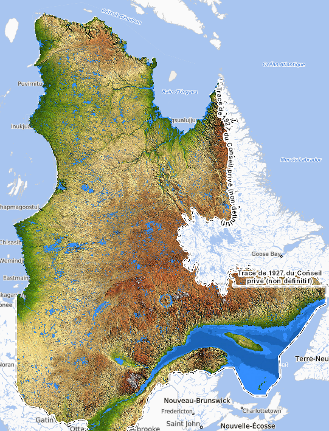
Dans un gisement, l’objectif est similaire : il s’agit de caractériser l’organisation spatiale des teneurs. Le gisement présente-t-il une variabilité faible ou élevée? Les teneurs varient-elles progressivement ou de manière discontinue? Certaines directions présentent-elles une continuité plus importante que d’autres?
Chaque phénomène géologique possède une organisation spatiale particulière, définie notamment par ses échelles de variabilité, ses directions privilégiées et son degré de continuité. Le variogramme constitue l’un des principaux outils utilisés pour caractériser cette organisation. Il décrit comment la dissimilarité entre les valeurs évolue avec leur séparation spatiale et fournit ainsi l’information nécessaire aux méthodes géostatistiques d’estimation et de simulation.
Exemple de continuité spatiale
Considérons quatre positions \(\mathbf{x}_0\), \(\mathbf{x}_1\), \(\mathbf{x}_2\) et \(\mathbf{x}_3\) présentées à la Figure 7.2. La teneur est observée aux positions \(\mathbf{x}_1\), \(\mathbf{x}_2\) et \(\mathbf{x}_3\), mais elle est inconnue en \(\mathbf{x}_0\).
En notant la variable régionalisée par \(z(\mathbf{x})\), le problème consiste à estimer \(z(\mathbf{x}_0)\) à partir des valeurs observées \(z(\mathbf{x}_1)\), \(z(\mathbf{x}_2)\) et \(z(\mathbf{x}_3)\).
Une première approche pourrait consister à accorder davantage de poids à \(\mathbf{x}_2\), puisqu’il s’agit du point géométriquement le plus proche de \(\mathbf{x}_0\). Cette décision suppose toutefois que la continuité spatiale soit identique dans toutes les directions.
Considérons plutôt un gisement tabulaire dont la continuité principale est orientée verticalement. Dans ce cas, la valeur observée en \(\mathbf{x}_1\) peut être plus représentative de la teneur en \(\mathbf{x}_0\) que celle observée en \(\mathbf{x}_2\), même si \(\mathbf{x}_1\) est situé à une plus grande distance euclidienne.
La distance géométrique ne suffit donc pas à déterminer l’information apportée par une observation. Il faut également tenir compte de l’orientation et de l’intensité de la continuité spatiale. Le variogramme permet précisément de quantifier cette dépendance en fonction du vecteur de séparation entre les positions. Cette information sera ensuite utilisée pour déterminer les poids attribués aux données lors de l’estimation.
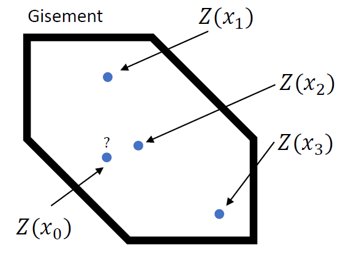
7.2 Variogramme et nuée variographique
Définition du variogramme
Dans de nombreux phénomènes spatiaux, les valeurs observées à faible distance tendent à être plus semblables que celles observées à grande distance. La question est alors la suivante : comment quantifier cette continuité spatiale?
Une approche consiste à comparer les valeurs prises par la variable régionalisée à différentes positions et à étudier comment leurs écarts évoluent en fonction de la distance et de la direction qui séparent ces positions.
Le variogramme est une fonction qui caractérise la structure spatiale d’une variable régionalisée. Il décrit comment la dissimilarité moyenne entre deux valeurs évolue en fonction de la distance et de la direction de séparation entre elles.
Considérons une fonction aléatoire \(Z(\mathbf{x})\). En pratique, nous ne disposons pas de plusieurs réalisations indépendantes du même gisement, mais d’une seule réalisation observée à un nombre limité de positions.
Pour estimer la structure spatiale à partir de ces données, il faut pouvoir considérer que des paires séparées par un même vecteur \(\mathbf{h}\) renseignent sur une même relation spatiale, même si elles se trouvent à différents endroits du domaine. Cette propriété nécessite certaines hypothèses de stationnarité.
La fonction aléatoire \(Z(\mathbf{x})\) est dite stationnaire d’ordre 2 lorsque :
- son espérance est constante dans le domaine :
\[ \mathbb{E}[Z(\mathbf{x})]=m; \]
- sa covariance entre deux positions dépend uniquement de leur vecteur de séparation \(\mathbf{h}\), et non de leur position absolue :
\[ \operatorname{Cov}\left[Z(\mathbf{x}),Z(\mathbf{x}+\mathbf{h})\right] = C(\mathbf{h}). \]
La variance est alors finie et constante :
\[ C(\mathbf{0})=\operatorname{Var}[Z(\mathbf{x})]. \]
Sous cette hypothèse, le variogramme est défini par :
\[ \gamma(\mathbf{h}) = \frac{1}{2} \operatorname{Var} \left[ Z(\mathbf{x}+\mathbf{h})-Z(\mathbf{x}) \right]. \]
Comme l’espérance des accroissements est nulle, cette expression peut aussi s’écrire :
\[ \gamma(\mathbf{h}) = \frac{1}{2} \mathbb{E} \left[ \left( Z(\mathbf{x}+\mathbf{h})-Z(\mathbf{x}) \right)^2 \right]. \]
Dans le cas d’une fonction aléatoire stationnaire d’ordre 2, le variogramme et la covariance sont liés par :
\[ \gamma(\mathbf{h})=C(\mathbf{0})-C(\mathbf{h}). \]
Si la covariance tend vers zéro lorsque la distance devient grande, le variogramme tend vers \(C(\mathbf{0})\), qui correspond à la variance de la variable. Cette valeur limite est appelée le palier.
La stationnarité d’ordre 2 n’est toutefois pas toujours une hypothèse appropriée. Certains phénomènes ne présentent pas de variance globale finie ou constante, alors que leurs différences entre positions demeurent statistiquement modélisables. On adopte alors une hypothèse plus faible : l’hypothèse intrinsèque.
La fonction aléatoire \(Z(\mathbf{x})\) vérifie l’hypothèse intrinsèque lorsque ses accroissements sont stationnaires :
- leur espérance est nulle :
\[ \mathbb{E} \left[ Z(\mathbf{x}+\mathbf{h})-Z(\mathbf{x}) \right] = 0; \]
- leur variance est finie et dépend uniquement du vecteur de séparation \(\mathbf{h}\) :
\[ \operatorname{Var} \left[ Z(\mathbf{x}+\mathbf{h})-Z(\mathbf{x}) \right] = 2\gamma(\mathbf{h}). \]
L’hypothèse intrinsèque est plus générale que la stationnarité d’ordre 2. Toute fonction aléatoire stationnaire d’ordre 2 vérifie l’hypothèse intrinsèque, mais l’inverse n’est pas nécessairement vrai.
Sous l’hypothèse intrinsèque, la variance ponctuelle de \(Z(\mathbf{x})\) peut ne pas être définie ou ne pas être constante, alors que la variance de ses accroissements demeure définie. Le variogramme peut alors croître sans atteindre de palier, comme dans le cas de certains modèles linéaires ou de puissance.
Dans cet ouvrage, le terme variogramme désigne la fonction comportant le facteur \(\frac{1}{2}\). Cette fonction est aussi appelée semi-variogramme dans certains domaines.
Pour une distance donnée, le variogramme mesure donc la dissimilarité moyenne entre des valeurs séparées par cette distance. Si les positions sont proches et que la variable présente une forte continuité spatiale, leurs écarts devraient généralement être faibles. Lorsque la distance augmente, ces écarts tendent à augmenter jusqu’à ce que la relation spatiale devienne faible ou négligeable.
Cette idée peut également être illustrée à l’aide d’un nuage de décalage. Pour un vecteur \(\mathbf{h}\) donné, on représente \(Z(\mathbf{x})\) sur un axe et \(Z(\mathbf{x}+\mathbf{h})\) sur l’autre. Lorsque \(\mathbf{h}\) est petit, les points tendent à se concentrer près de la diagonale. Lorsque la distance augmente, le nuage se disperse progressivement, ce qui correspond généralement à une augmentation du variogramme.
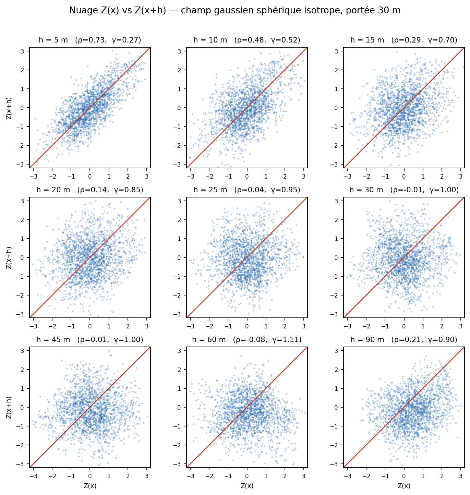
Variogramme expérimental
Le variogramme défini précédemment est une propriété théorique de la fonction aléatoire. En pratique, les espérances et les variances qui interviennent dans sa définition sont inconnues. Nous ne disposons que d’un nombre limité de valeurs observées \(z(\mathbf{x}_i)\).
Il faut donc estimer le variogramme à partir des paires de données disponibles.
Le variogramme expérimental, noté \(\widehat{\gamma}\), est un estimateur du variogramme calculé à partir des observations disponibles.
Pour une classe de vecteurs de séparation centrée sur \(\mathbf{h}_k\), le variogramme expérimental est calculé par :
\[ \widehat{\gamma}(\mathbf{h}_k) = \frac{1}{2N_k} \sum_{(i,j)\in\mathcal{P}_k} \left[ z(\mathbf{x}_j)-z(\mathbf{x}_i) \right]^2, \]
où :
- \(\mathcal{P}_k\) est l’ensemble des paires dont le vecteur de séparation est suffisamment proche de \(\mathbf{h}_k\);
- \(N_k\) est le nombre de paires contenues dans cet ensemble.
Pour chaque paire, on calcule l’écart entre les deux valeurs, on élève cet écart au carré, puis on fait la moyenne des contributions obtenues. Le facteur \(\frac{1}{2}\) provient de la définition du variogramme.
Comme les données ne sont généralement pas séparées par des distances exactement identiques, les paires sont regroupées en classes de distance et, au besoin, de direction.
Effet de la direction : anisotropie
La continuité spatiale n’est pas nécessairement identique dans toutes les directions. Dans un gisement stratifié, par exemple, les teneurs peuvent être plus continues parallèlement à la stratification que dans la direction perpendiculaire. Dans un panache de contamination, la continuité peut également différer entre les directions longitudinale, transversale et verticale.
Pour étudier cette variation directionnelle, on calcule des variogrammes selon différentes orientations :
\[ \widehat{\gamma}(h_k,\theta) = \frac{1}{2N(h_k,\theta)} \sum_{(i,j)\in\mathcal{P}(h_k,\theta)} \left[ z(\mathbf{x}_j)-z(\mathbf{x}_i) \right]^2. \]
Ici, \(\mathcal{P}(h_k,\theta)\) contient les paires dont la distance est proche de \(h_k\) et dont l’orientation est proche de la direction \(\theta\).
En deux dimensions, l’orientation est souvent exprimée par un azimut, mesuré à partir du nord dans le sens horaire. Comme l’ordre des deux points d’une paire ne modifie pas leur contribution au variogramme, les vecteurs opposés sont équivalents :
\[ \gamma(\mathbf{h})=\gamma(-\mathbf{h}). \]
Ainsi, une direction de \(30^\circ\) et une direction de \(210^\circ\) représentent le même axe. Il suffit donc généralement d’étudier les orientations comprises entre \(0^\circ\) et \(180^\circ\).
Choix des tolérances
En pratique, il est rare de trouver plusieurs paires exactement séparées par une distance \(h\) et orientées précisément selon une direction \(\theta\). Des tolérances sont donc utilisées pour regrouper les paires suffisamment semblables.
Les principaux paramètres de sélection sont :
- la distance cible, ou pas de calcul;
- la tolérance sur la distance;
- la tolérance angulaire;
- la largeur maximale, ou bandwidth, autour de l’axe directionnel.
Une tolérance trop faible peut produire des classes contenant peu de paires, ce qui rend le variogramme expérimental instable. À l’inverse, une tolérance trop large peut regrouper des paires qui ne représentent pas la même échelle ou la même direction de continuité.
Le choix des tolérances constitue donc un compromis entre la précision spatiale et la stabilité statistique. Elles doivent permettre de conserver un nombre suffisant de paires dans chaque classe sans masquer les structures directionnelles présentes dans les données.
La Figure 7.4 illustre ce principe. Pour chaque point de référence en rouge, les points bleus représentent les observations retenues selon la distance cible et les tolérances choisies. Une ouverture angulaire plus grande augmente le nombre de paires, mais réduit la précision directionnelle du calcul.
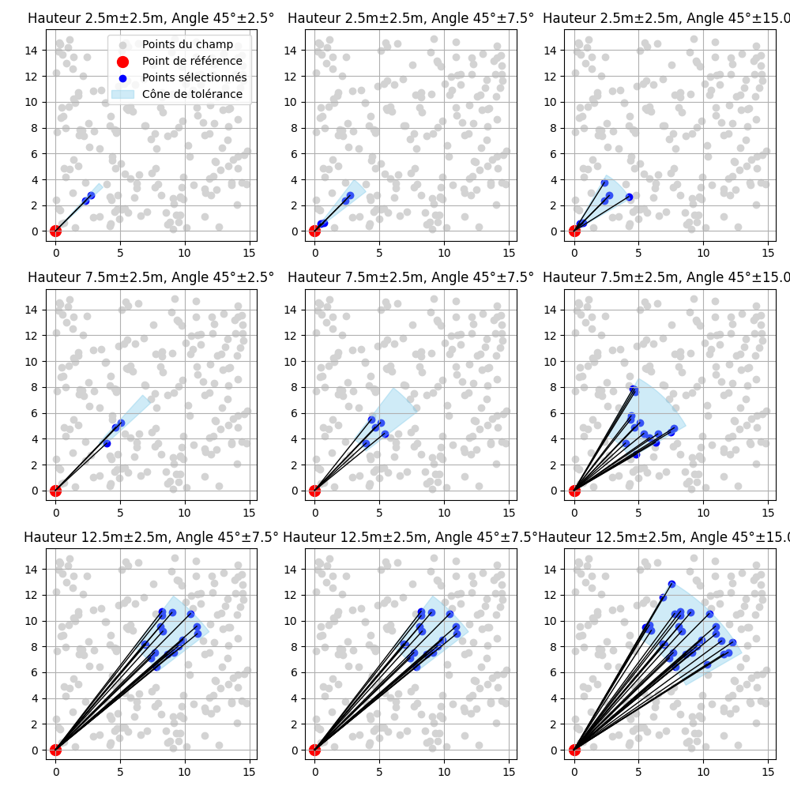
Nuée variographique
Avant de regrouper les paires en classes de distance, il est utile d’examiner leurs contributions individuellement. Cette représentation est appelée nuée variographique.
Pour chaque paire de positions \((\mathbf{x}_i,\mathbf{x}_j)\), on calcule :
- la distance entre les deux positions :
\[ h_{ij} = \left\lVert \mathbf{x}_j-\mathbf{x}_i \right\rVert; \]
- la contribution variographique de la paire :
\[ \gamma_{ij} = \frac{1}{2} \left[ z(\mathbf{x}_j)-z(\mathbf{x}_i) \right]^2. \]
Chaque paire produit un point dans la nuée variographique. La distance \(h_{ij}\) est placée en abscisse et la contribution \(\gamma_{ij}\) en ordonnée.
Il ne s’agit pas d’une variance calculée à partir d’une seule paire, mais d’une contribution individuelle au calcul du variogramme expérimental.
La nuée variographique constitue ainsi une représentation brute de toutes les différences observées. Elle est généralement très dispersée, puisque deux paires séparées par une distance semblable peuvent traverser des structures géologiques différentes ou contenir des valeurs très contrastées.
Le variogramme expérimental est obtenu en regroupant les contributions de la nuée par classes de distance, puis en calculant leur moyenne dans chaque classe.
La largeur de ces classes influence le résultat :
- des classes trop étroites contiennent peu de paires et produisent un variogramme instable;
- des classes trop larges mélangent des distances différentes et peuvent masquer certaines caractéristiques de la structure spatiale.
La Figure 7.5 montre l’effet de différentes largeurs de classes sur le regroupement des contributions variographiques.
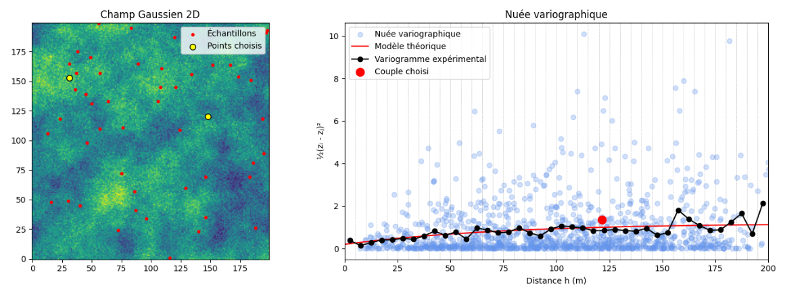
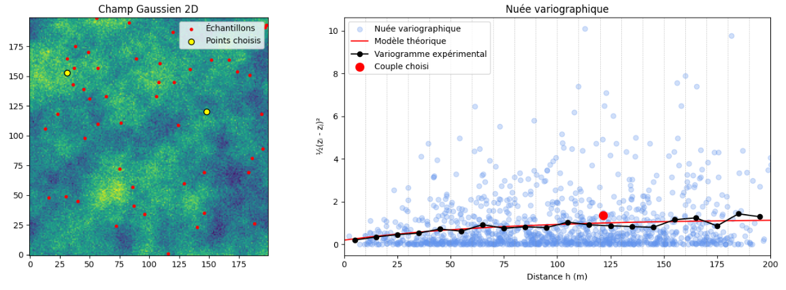
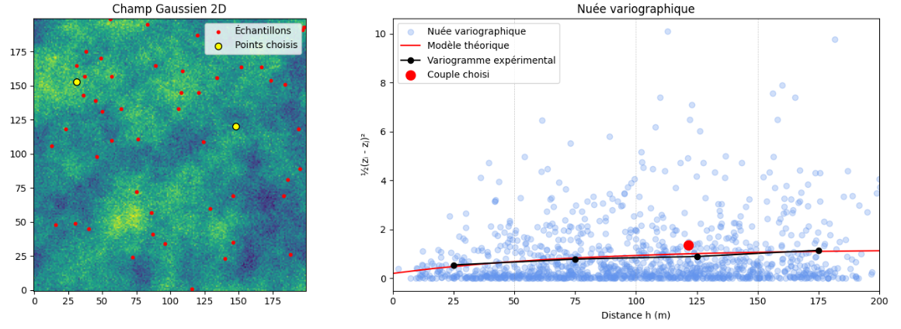
🧮 Atelier interactif 7.1 — Nuée variographique
Échantillonnez aléatoirement un champ simulé et observez les contributions variographiques \((h_{ij},\gamma_{ij})\) de chaque paire ainsi que la construction du variogramme expérimental. Faites varier le nombre de points et le nombre de classes afin d’observer leur influence sur la stabilité et la précision du résultat.
Exemples numériques simplifiés
Exemple 1D : effet de la distance
Considérons la série suivante, échantillonnée tous les mètres :
\[ z(x)=\{1,\ 1,\ 2,\ 2,\ 3,\ 3\}. \]
Les six valeurs sont situées aux positions \(x=0\), \(1\), \(2\), \(3\), \(4\) et \(5\) m.
Pour une distance \(h=1\) m, les cinq paires sont :
\[ (1,1),\qquad (1,2),\qquad (2,2),\qquad (2,3),\qquad (3,3). \]
Le variogramme expérimental vaut :
\[ \widehat{\gamma}(1) = \frac{1}{2\times 5} \left[ (1-1)^2 + (1-2)^2 + (2-2)^2 + (2-3)^2 + (3-3)^2 \right] = 0{,}20. \]
Pour une distance \(h=2\) m, les quatre paires sont :
\[ (1,2),\qquad (1,2),\qquad (2,3),\qquad (2,3). \]
On obtient :
\[ \widehat{\gamma}(2) = \frac{1}{2\times 4} \left[ (1-2)^2 + (1-2)^2 + (2-3)^2 + (2-3)^2 \right] = 0{,}50. \]
Pour une distance \(h=3\) m, les trois paires sont :
\[ (1,2),\qquad (1,3),\qquad (2,3). \]
Ainsi :
\[ \widehat{\gamma}(3) = \frac{1}{2\times 3} \left[ (1-2)^2 + (1-3)^2 + (2-3)^2 \right] = 1{,}00. \]
Les autres distances peuvent être calculées de la même manière :
| Distance \(h\) | Nombre de paires | \(\widehat{\gamma}(h)\) |
|---|---|---|
| 1 m | 5 | 0,20 |
| 2 m | 4 | 0,50 |
| 3 m | 3 | 1,00 |
| 4 m | 2 | 2,00 |
| 5 m | 1 | 2,00 |
Le variogramme est faible à courte distance, car les valeurs voisines sont souvent identiques ou peu différentes. Il augmente ensuite avec la distance, puisque les paires comparent progressivement les faibles valeurs du début de la série aux valeurs plus élevées de sa fin.
Cet exemple montre que le variogramme traduit la perte progressive de similarité entre les observations lorsque leur distance augmente. Il montre aussi que le nombre de paires diminue avec la distance, ce qui rend généralement les dernières valeurs du variogramme expérimental moins robustes.
Exemple 2D : effet de l’orientation
Considérons maintenant la grille suivante, dont l’espacement est de 1 m dans les directions horizontale et verticale :
\[ \begin{bmatrix} 1 & 1 & 1 \\ 3 & 3 & 3 \\ 5 & 5 & 5 \end{bmatrix}. \]
Les valeurs sont constantes le long des lignes, mais augmentent verticalement. La continuité est donc plus forte horizontalement que verticalement.
Direction horizontale
Pour une distance horizontale de 1 m, les six paires sont :
\[ (1,1),\ (1,1),\ (3,3),\ (3,3),\ (5,5),\ (5,5). \]
Toutes les différences sont nulles :
\[ \widehat{\gamma}_{\mathrm{H}}(1) = \frac{1}{2\times 6} \sum_{i=1}^{6}(0)^2 = 0. \]
Le variogramme horizontal est donc nul à cette distance, ce qui traduit une continuité parfaite dans cette direction dans cet exemple.
Direction verticale
Pour une distance verticale de 1 m, les six paires sont :
\[ (1,3),\ (1,3),\ (1,3),\ (3,5),\ (3,5),\ (3,5). \]
Chaque différence vaut 2. Le variogramme vertical est donc :
\[ \widehat{\gamma}_{\mathrm{V}}(1) = \frac{1}{2\times 6} \left[ 6\times(2)^2 \right] = 2. \]
| Direction | Distance | Nombre de paires | \(\widehat{\gamma}(h)\) |
|---|---|---|---|
| Horizontale | 1 m | 6 | 0,00 |
| Verticale | 1 m | 6 | 2,00 |
Pour une même distance de 1 m, le variogramme est nul horizontalement et égal à 2 verticalement. La variable est donc beaucoup plus continue dans la direction horizontale.
Cet exemple illustre l’anisotropie : la continuité spatiale dépend de la direction. Un variogramme directionnel permet de détecter cette différence et de la représenter dans le modèle spatial.
Le variogramme augmente lorsque les valeurs séparées par une distance donnée deviennent plus différentes. Si cette augmentation varie selon la direction, le phénomène présente une anisotropie.
7.3 Propriétés mathématiques du variogramme
Le variogramme possède plusieurs propriétés qui découlent de sa définition. Certaines constituent des conditions mathématiques que tout modèle de variogramme doit respecter, tandis que d’autres correspondent à des comportements fréquemment observés dans les phénomènes spatiaux.
1. Non-négativité
Le variogramme est toujours positif ou nul :
\[ \gamma(\mathbf{h}) \geq 0. \]
Cette propriété découle directement de sa définition :
\[ \gamma(\mathbf{h}) = \frac{1}{2} \mathbb{E} \left[ \left( Z(\mathbf{x}+\mathbf{h})-Z(\mathbf{x}) \right)^2 \right]. \]
Comme le carré d’une différence est toujours positif ou nul, son espérance l’est également.
2. Valeur à l’origine et effet de pépite
Par définition, le variogramme est toujours nul exactement à l’origine :
\[ \gamma(\mathbf{0})=0, \]
puisqu’une valeur comparée à elle-même ne présente aucune différence :
\[ Z(\mathbf{x}+\mathbf{0})-Z(\mathbf{x})=0. \]
En l’absence d’effet de pépite, le variogramme tend aussi vers zéro lorsque la distance tend vers zéro :
\[ \lim_{\mathbf{h}\to\mathbf{0}} \gamma(\mathbf{h}) = 0. \]
En présence d’un effet de pépite, le variogramme demeure nul exactement à l’origine, mais il présente une discontinuité dès que la distance devient non nulle :
\[ \gamma(\mathbf{0})=0, \]
alors que
\[ \lim_{\substack{\mathbf{h}\to\mathbf{0}\\\mathbf{h}\neq\mathbf{0}}} \gamma(\mathbf{h}) = c_0, \]
où \(c_0\) est l’effet de pépite.
Un modèle comportant un effet de pépite peut donc être représenté sous la forme :
\[ \gamma(\mathbf{h}) = \begin{cases} 0, & \mathbf{h}=\mathbf{0},\\ c_0+\gamma_s(\mathbf{h}), & \mathbf{h}\neq\mathbf{0}, \end{cases} \]
où \(\gamma_s(\mathbf{h})\) représente la composante spatialement structurée du variogramme et tend vers zéro lorsque \(\mathbf{h}\) tend vers \(\mathbf{0}\).
L’effet de pépite n’est pas la valeur du variogramme exactement à l’origine. Il correspond au saut entre \(\gamma(\mathbf{0})=0\) et la valeur du variogramme pour une distance non nulle aussi petite que possible.
Cette discontinuité traduit une variabilité qui ne peut pas être résolue à l’échelle d’observation. Elle peut provenir de deux principales sources :
- une variabilité géologique à une échelle plus fine que l’espacement ou le support des échantillons;
- des erreurs de localisation, d’échantillonnage, de préparation ou d’analyse.
Deux échantillons distincts prélevés à très faible distance peuvent ainsi présenter des teneurs différentes. Le variogramme seul ne permet généralement pas de séparer la variabilité géologique à petite échelle des erreurs de mesure. Des échantillons répétés ou des données de contrôle de qualité sont nécessaires pour mieux distinguer ces contributions.
Dans un variogramme expérimental, aucune paire ne correspond habituellement à une distance exactement nulle. L’effet de pépite est donc estimé par extrapolation à partir des premières classes de distance ou à l’aide d’un modèle théorique.
3. Symétrie
Le variogramme est une fonction paire :
\[ \gamma(\mathbf{h}) = \gamma(-\mathbf{h}). \]
En effet, l’inversion du vecteur de séparation change seulement l’ordre des deux valeurs :
\[ \left[ Z(\mathbf{x}+\mathbf{h})-Z(\mathbf{x}) \right]^2 = \left[ Z(\mathbf{x})-Z(\mathbf{x}+\mathbf{h}) \right]^2. \]
Une direction et son opposée sont donc équivalentes. Par exemple, en deux dimensions, les orientations de \(30^\circ\) et de \(210^\circ\) décrivent le même axe de continuité.
4. Condition d’admissibilité
Toute fonction positive et symétrique n’est pas nécessairement un variogramme valide. Pour pouvoir être utilisée dans les méthodes géostatistiques, une fonction doit également être conditionnellement négative semi-définie.
Pour un ensemble de \(n\) positions \(\mathbf{x}_1,\ldots,\mathbf{x}_n\) et de coefficients \(\lambda_1,\ldots,\lambda_n\) dont la somme est nulle,
\[ \sum_{i=1}^{n}\lambda_i=0, \]
la fonction doit satisfaire :
\[ \sum_{i=1}^{n} \sum_{j=1}^{n} \lambda_i\lambda_j \gamma(\mathbf{x}_i-\mathbf{x}_j) \leq 0. \]
Cette condition garantit la cohérence mathématique du modèle et permet notamment d’obtenir des variances d’estimation valides. Elle explique pourquoi on ne peut pas ajuster n’importe quelle courbe à un variogramme expérimental : le modèle retenu doit appartenir à une famille de variogrammes admissibles.
5. Évolution avec la distance
Dans de nombreux phénomènes naturels, le variogramme tend à augmenter avec la distance. Les valeurs observées à faible distance sont généralement semblables, de sorte que leurs différences sont faibles. Lorsque la distance augmente, les différences tendent à devenir plus importantes.
Cette croissance n’est toutefois pas une propriété mathématique obligatoire. Un variogramme peut présenter des diminutions locales ou des oscillations lorsque le phénomène possède une organisation périodique.
Par exemple, une succession régulière de couches géologiques peut produire des valeurs semblables à certaines distances et différentes à d’autres. Le variogramme peut alors augmenter, diminuer, puis augmenter de nouveau. Ce comportement est appelé effet de trou.
Un variogramme expérimental peut également être irrégulier en raison :
- d’un nombre insuffisant de paires;
- de valeurs extrêmes;
- d’une anisotropie non prise en compte;
- d’une tendance spatiale;
- d’une structure géologique complexe;
- de classes de distance ou de tolérances mal choisies.
L’interprétation ne doit donc pas reposer sur chaque fluctuation du variogramme expérimental, mais sur sa structure générale et sur sa cohérence avec le phénomène étudié.
6. Relation avec la covariance et la corrélation
Sous l’hypothèse de stationnarité d’ordre 2, la continuité spatiale peut également être décrite à l’aide de la covariance :
\[ C(\mathbf{h}) = \operatorname{Cov} \left[ Z(\mathbf{x}), Z(\mathbf{x}+\mathbf{h}) \right]. \]
Lorsque la moyenne \(m\) est constante, cette covariance s’écrit :
\[ C(\mathbf{h}) = \mathbb{E} \left[ \left( Z(\mathbf{x})-m \right) \left( Z(\mathbf{x}+\mathbf{h})-m \right) \right]. \]
À l’origine, la covariance correspond à la variance de la fonction aléatoire :
\[ C(\mathbf{0}) = \operatorname{Var}[Z(\mathbf{x})]. \]
La fonction de corrélation spatiale est obtenue en normalisant la covariance par cette variance :
\[ \rho(\mathbf{h}) = \frac{C(\mathbf{h})}{C(\mathbf{0})}. \]
Elle satisfait :
\[ \rho(\mathbf{0})=1. \]
Sous stationnarité d’ordre 2, le variogramme et la covariance sont liés par :
\[ \gamma(\mathbf{h}) = C(\mathbf{0})-C(\mathbf{h}). \]
La relation peut également être exprimée en fonction de la corrélation :
\[ \gamma(\mathbf{h}) = C(\mathbf{0}) \left[ 1-\rho(\mathbf{h}) \right]. \]
Le variogramme et la covariance décrivent donc la même structure spatiale, mais de manière inverse :
- lorsque la covariance est élevée, le variogramme est faible;
- lorsque la covariance diminue, le variogramme augmente;
- lorsque la covariance est négative, le variogramme peut dépasser \(C(\mathbf{0})\).
Si la covariance tend vers zéro lorsque la distance augmente, les valeurs deviennent non corrélées et le variogramme tend vers la variance :
\[ \lim_{\lVert\mathbf{h}\rVert\to\infty} C(\mathbf{h}) = 0 \quad\Longrightarrow\quad \lim_{\lVert\mathbf{h}\rVert\to\infty} \gamma(\mathbf{h}) = C(\mathbf{0}). \]
La valeur \(C(\mathbf{0})\) constitue alors le palier du variogramme.
Une covariance nulle n’implique toutefois pas nécessairement que les valeurs sont indépendantes. Cette équivalence exige des hypothèses supplémentaires, notamment dans le cas d’une fonction aléatoire gaussienne.
Sous la seule hypothèse intrinsèque, la covariance peut ne pas être définie. Le variogramme demeure alors utilisable et peut croître sans atteindre de palier.
La Figure 7.6 illustre la relation entre ces deux fonctions. Lorsque la covariance décroît, le variogramme augmente de manière complémentaire, leur somme demeurant égale à \(C(\mathbf{0})\).
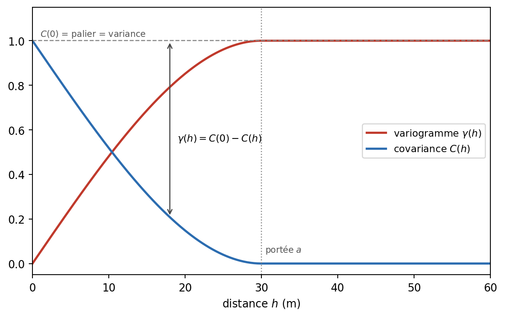
🧮 Atelier interactif 7.2 — Covariance, corrélation et variogramme
À gauche, le nuage représente les couples \((z(\mathbf{x}),z(\mathbf{x}+\mathbf{h}))\) pour le décalage \(\mathbf{h}\) sélectionné. Lorsque les deux valeurs sont semblables, les points se situent près de la diagonale. Lorsque leur différence augmente, ils s’en éloignent.
Pour une paire donnée, le carré de la distance perpendiculaire du point à la diagonale est égal à sa contribution variographique :
\[ d_{\perp}^{\,2} = \frac{1}{2} \left[ z(\mathbf{x}+\mathbf{h})-z(\mathbf{x}) \right]^2. \]
La moyenne de ces distances au carré pour toutes les paires de la classe correspond au variogramme expérimental \(\widehat{\gamma}(\mathbf{h})\).
À droite, l’évolution conjointe du variogramme \(\gamma(h)\), de la covariance \(C(h)\) et de la corrélation \(\rho(h)\) permet de visualiser les relations :
\[ \gamma(h) = C(0)-C(h) \]
et
\[ \rho(h) = \frac{C(h)}{C(0)}. \]
7.4 Modèles mathématiques admissibles
Une fois le variogramme expérimental calculé, il faut lui ajuster un modèle théorique. Ce modèle est une fonction analytique définie pour toute distance et toute direction. Il permet de représenter la structure spatiale au-delà des seules classes du variogramme expérimental et sera utilisé dans les méthodes d’estimation et de simulation.
Avant de présenter les principaux modèles, il convient de préciser les paramètres qui décrivent un variogramme.
Paramètres du variogramme
Dans un cas isotrope, ou en une dimension, un variogramme est généralement décrit à l’aide de trois paramètres principaux :
- Effet de pépite (nugget effect), noté \(C_0\) : discontinuité du variogramme à l’origine. Par définition, \(\gamma(\mathbf{0})=0\), mais, en présence d’un effet de pépite,
\[ \lim_{\substack{\mathbf{h}\to\mathbf{0}\\\mathbf{h}\neq\mathbf{0}}} \gamma(\mathbf{h}) = C_0. \]
Cette discontinuité peut représenter une variabilité à une échelle plus fine que celle de l’échantillonnage, des erreurs de mesure, ou une combinaison des deux.
- Palier total (total sill), noté \(C_{\mathrm{tot}}\) : valeur vers laquelle le variogramme tend ou se stabilise lorsque la corrélation spatiale devient négligeable. Pour un modèle emboîté comprenant un effet de pépite et \(n\) structures spatiales,
\[ C_{\mathrm{tot}} = C_0+\sum_{i=1}^{n} C_i, \]
où les \(C_i\) sont les paliers partiels des structures.
- Portée (range) : distance caractérisant l’étendue de la continuité spatiale. Pour un modèle à portée finie, comme le modèle sphérique, elle correspond à la distance à laquelle le palier est atteint. Pour un modèle asymptotique, comme les modèles exponentiel et gaussien, on utilise plutôt une portée effective, souvent définie comme la distance à laquelle 95 % du palier est atteint.
Dans un modèle isotrope, ces paramètres sont identiques dans toutes les directions. En deux ou trois dimensions, la continuité peut toutefois varier selon l’orientation. Le modèle doit alors comprendre des portées directionnelles et les angles qui définissent les axes principaux de l’anisotropie.
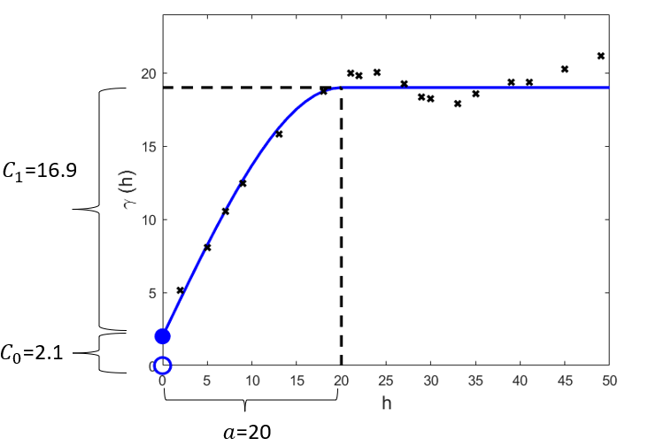
Conditions d’admissibilité des modèles
Toute fonction croissante ne peut pas être utilisée comme modèle de variogramme. Le modèle doit respecter des conditions mathématiques qui garantissent la cohérence des variances et des systèmes de krigeage.
Admissibilité d’une covariance
Considérons une combinaison linéaire de variables aléatoires :
\[ L = \sum_{i=1}^{n} \lambda_i Z(\mathbf{x}_i). \]
Sa variance doit être positive ou nulle :
\[ \operatorname{Var}(L) = \sum_{i=1}^{n} \sum_{j=1}^{n} \lambda_i\lambda_j C(\mathbf{x}_i-\mathbf{x}_j) \geq 0. \]
La fonction de covariance \(C(\mathbf{h})\) doit donc être définie positive.
Admissibilité d’un variogramme
Dans le cadre intrinsèque, la covariance n’est pas nécessairement définie. On travaille alors directement avec le variogramme. Pour tout ensemble de coefficients dont la somme est nulle,
\[ \sum_{i=1}^{n}\lambda_i=0, \]
le variogramme doit satisfaire :
\[ \sum_{i=1}^{n} \sum_{j=1}^{n} \lambda_i\lambda_j \gamma(\mathbf{x}_i-\mathbf{x}_j) \leq 0. \]
Le variogramme est alors dit conditionnellement négatif semi-défini.
Lorsque la covariance existe, les deux formulations sont équivalentes. En utilisant
\[ \gamma(\mathbf{h}) = C(\mathbf{0})-C(\mathbf{h}), \]
le terme constant \(C(\mathbf{0})\) disparaît lorsque la somme des poids est nulle.
En pratique, l’admissibilité n’est généralement pas vérifiée directement. On utilise des familles de modèles dont la validité est connue. Les propriétés suivantes sont notamment utiles :
- une somme de modèles de variogramme admissibles, avec des coefficients positifs, demeure admissible;
- une somme de modèles de covariance admissibles, avec des coefficients positifs, demeure admissible;
- un produit de modèles de covariance admissibles demeure admissible;
- chaque structure d’un modèle emboîté peut posséder ses propres paramètres et sa propre anisotropie.
L’admissibilité dépend aussi de la dimension. Un modèle valide en trois dimensions l’est également dans les dimensions inférieures, mais un modèle valide uniquement en une dimension n’est pas nécessairement admissible en deux ou trois dimensions.
Modèles classiques de variogramme
Les modèles suivants sont couramment utilisés en géostatistique. Dans les modèles stationnaires, le variogramme et la covariance sont liés par :
\[ \gamma(\mathbf{h}) = C(\mathbf{0})-C(\mathbf{h}). \]
Dans les équations ci-dessous, \(C\) représente le palier partiel de la structure considérée. Un effet de pépite \(C_0\) peut être ajouté séparément au modèle.
Effet de pépite pur
Le modèle de pépite pure est défini par :
\[ \gamma(\mathbf{h}) = \begin{cases} 0, & \text{si } \mathbf{h}=\mathbf{0},\\ C_0, & \text{si } \mathbf{h}\neq\mathbf{0}. \end{cases} \]
La covariance correspondante est :
\[ C(\mathbf{h}) = \begin{cases} C_0, & \text{si } \mathbf{h}=\mathbf{0},\\ 0, & \text{si } \mathbf{h}\neq\mathbf{0}. \end{cases} \]
Deux positions distinctes ne présentent alors aucune covariance spatiale. Ce modèle représente un bruit spatial non corrélé ou une variabilité entièrement située sous l’échelle d’observation.
L’effet de pépite n’est pas la valeur du variogramme exactement à l’origine. Le variogramme satisfait toujours \(\gamma(\mathbf{0})=0\). L’effet de pépite correspond au saut entre cette valeur et le variogramme observé pour une distance non nulle tendant vers zéro.
Modèle sphérique
Le modèle sphérique s’écrit :
\[ \gamma(h) = \begin{cases} C \left[ \frac{3h}{2a} - \frac{1}{2} \left( \frac{h}{a} \right)^3 \right], & 0<h\leq a,\\ C, & h>a,\\ 0, & h=0. \end{cases} \]
La covariance correspondante est :
\[ C(h) = \begin{cases} C \left[ 1-\frac{3h}{2a} + \frac{1}{2} \left( \frac{h}{a} \right)^3 \right], & 0\leq h\leq a,\\ 0, & h>a. \end{cases} \]
Le modèle sphérique :
- atteint exactement son palier à la distance \(a\);
- possède une pente non nulle à l’origine;
- est fréquemment utilisé pour représenter des structures géologiques présentant une portée finie.
Modèle exponentiel
Le modèle exponentiel est asymptotique : il tend vers son palier sans jamais l’atteindre exactement.
Deux conventions sont couramment utilisées.
Convention fondée sur la longueur caractéristique
Dans cette convention,
\[ \gamma(h) = C \left[ 1-\exp\left(-\frac{h}{a}\right) \right], \]
et
\[ C(h) = C \exp\left(-\frac{h}{a}\right). \]
À la distance \(h=a\), le variogramme atteint :
\[ 1-\exp(-1) \approx 0{,}632 \]
du palier. La portée effective à 95 % vaut approximativement :
\[ a_{95} \approx 3a. \]
Convention fondée sur la portée effective
Si le paramètre \(a\) représente directement la portée effective à 95 %, le modèle s’écrit :
\[ \gamma(h) = C \left[ 1-\exp\left(-\frac{3h}{a}\right) \right], \]
et
\[ C(h) = C \exp\left(-\frac{3h}{a}\right). \]
Les deux conventions sont utilisées dans les logiciels et dans la littérature. Il faut toujours vérifier la définition du paramètre \(a\) avant de comparer des portées obtenues avec différents outils. Dans cet ouvrage, la convention fondée sur la portée effective à 95 % est utilisée.
Le modèle exponentiel présente une croissance approximativement linéaire à l’origine et produit des champs relativement rugueux à courte distance.
Modèle gaussien
Le modèle gaussien est également asymptotique.
Convention fondée sur la longueur caractéristique
\[ \gamma(h) = C \left[ 1-\exp\left( -\left(\frac{h}{a}\right)^2 \right) \right], \]
et
\[ C(h) = C \exp\left( -\left(\frac{h}{a}\right)^2 \right). \]
Convention fondée sur la portée effective
Si \(a\) représente la portée effective à 95 % :
\[ \gamma(h) = C \left[ 1-\exp\left( -3\left(\frac{h}{a}\right)^2 \right) \right], \]
et
\[ C(h) = C \exp\left( -3\left(\frac{h}{a}\right)^2 \right). \]
Le modèle gaussien présente une croissance parabolique à l’origine. Il décrit donc une très forte continuité à courte distance et produit des champs beaucoup plus lisses que les modèles sphérique ou exponentiel.
Un modèle gaussien sans pépite peut conduire à des matrices de covariance mal conditionnées lorsque plusieurs données sont très rapprochées. L’ajout d’une petite pépite peut alors améliorer la stabilité numérique, mais il doit rester justifié par les données et non être ajouté systématiquement.
Modèle de puissance
Le modèle de puissance s’écrit :
\[ \gamma(h) = k h^\alpha, \]
avec, dans l’usage courant,
\[ 0<\alpha<2. \]
Ce modèle :
- ne possède pas de palier;
- relève du cadre intrinsèque;
- ne possède pas de covariance stationnaire associée;
- est utilisé lorsque la continuité spatiale ne présente pas de portée apparente à l’échelle étudiée.
Le cas \(\alpha=1\) correspond au modèle linéaire. La valeur \(\alpha=2\) constitue un cas limite admissible dans certains cadres théoriques, mais elle correspond à une structure très particulière, associée à un gradient aléatoire parfaitement régulier. Elle est généralement exclue des modèles de puissance usuels employés pour représenter une variabilité spatiale stationnaire ou intrinsèque ordinaire.
Modèle à effet de trou
Certains phénomènes présentent une organisation pseudo-périodique. Le variogramme peut alors dépasser son palier, redescendre, puis osciller avec une amplitude qui diminue progressivement. Ce comportement est appelé effet de trou.
Un modèle classique est fondé sur le sinus cardinal :
\[ C(h) = C \frac{\sin(h/a)}{h/a}. \]
Le variogramme correspondant est :
\[ \gamma(h) = C \left[ 1- \frac{\sin(h/a)}{h/a} \right]. \]
À l’origine, on utilise la limite :
\[ \lim_{h\to0} \frac{\sin(h/a)}{h/a} = 1. \]
L’effet de trou peut représenter une alternance plus ou moins régulière de structures, par exemple des bancs riches et pauvres ou des lentilles espacées de façon répétitive.
Un creux dans un variogramme expérimental ne suffit toutefois pas à démontrer un effet de trou. Il peut aussi résulter d’un faible nombre de paires, de classes de distance inadéquates ou d’un variogramme bruité. L’interprétation doit donc être cohérente avec la géologie et, idéalement, être observée dans plusieurs directions ou plusieurs ensembles de données.
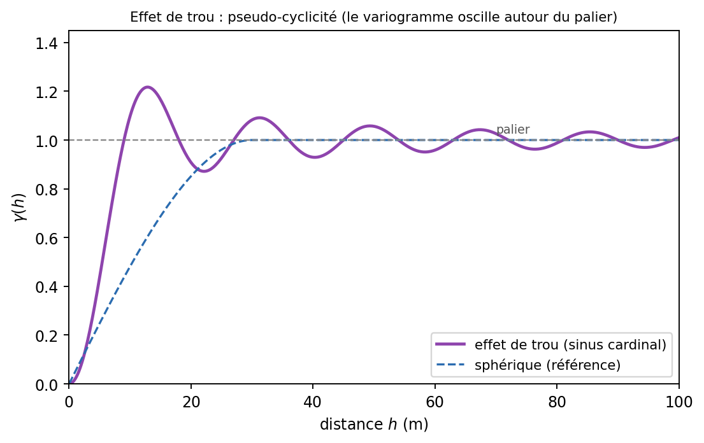
La Figure 7.9 compare le comportement des principaux modèles. Le modèle gaussien est parabolique à l’origine, tandis que les modèles sphérique et exponentiel présentent une pente non nulle. Le modèle de puissance ne possède pas de palier et le modèle à effet de trou oscille autour de celui-ci.
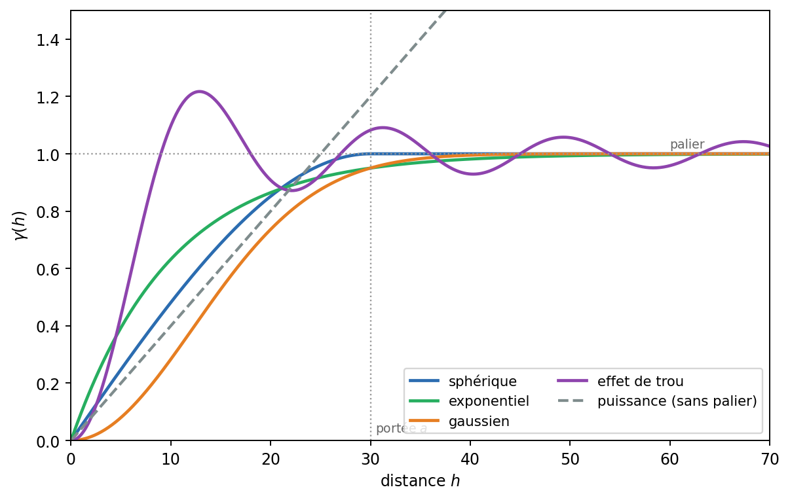
La forme du variogramme à l’origine contrôle la régularité du champ modélisé :
- avec une pépite pure, deux positions distinctes, même très rapprochées, peuvent présenter des valeurs très différentes;
- avec une croissance linéaire à l’origine, comme pour les modèles sphérique et exponentiel, le champ est continu en moyenne quadratique mais présente une variabilité marquée à courte distance;
- avec une croissance parabolique, comme pour le modèle gaussien, le champ est beaucoup plus lisse.
La Figure 7.10 illustre l’effet du choix du modèle sur les champs simulés. Le dernier panneau ajoute une réalisation du modèle à effet de trou : le champ y alterne régulièrement des valeurs fortes et faibles, avec une pseudo-période voisine de \(2\pi a\). Contrairement aux modèles à palier, cette alternance persiste sur toute l’étendue du domaine, ce qui traduit une organisation répétitive du phénomène plutôt qu’une simple perte de corrélation avec la distance.
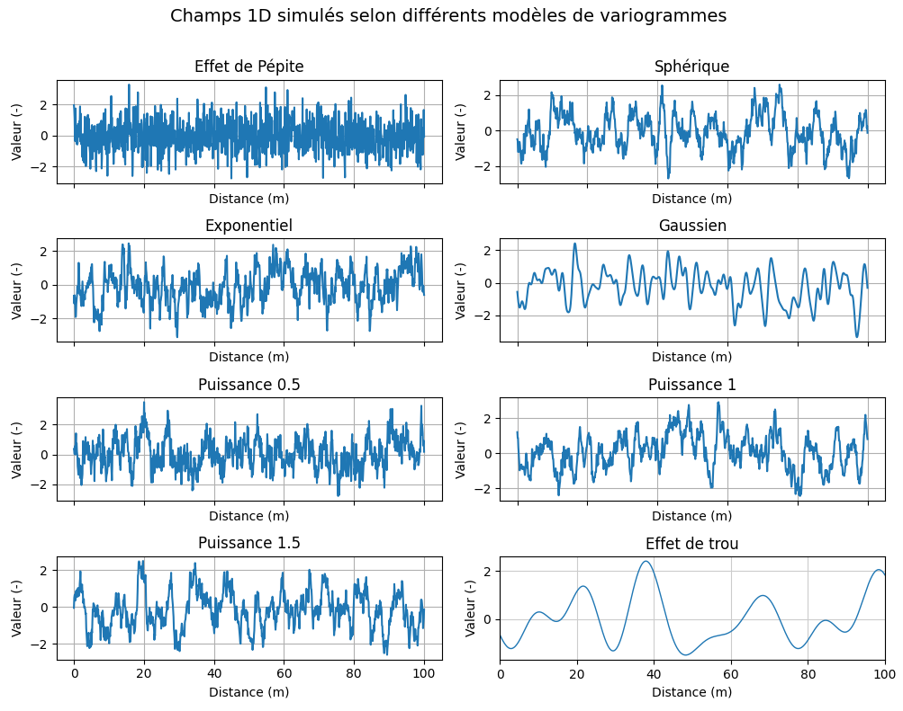
🧮 Atelier interactif 7.3 — Modèles théoriques de variogramme
Comparez les modèles sphérique, exponentiel et gaussien pour un même palier, un même effet de pépite et une même portée effective à 95 %. Observez la différence entre leur comportement à l’origine et vérifiez l’influence de la convention utilisée pour définir le paramètre de portée.
Les modèles précédents supposent que la continuité est identique dans toutes les directions. Cette hypothèse est rarement vérifiée dans les milieux géologiques. Il faut alors introduire l’anisotropie.
Anisotropie
La continuité spatiale d’un phénomène géologique peut varier selon la direction. Un gisement stratiforme ou lenticulaire, par exemple, présente souvent une continuité plus importante parallèlement à son axe principal que dans la direction perpendiculaire.
On distingue principalement l’anisotropie géométrique et l’anisotropie zonale (Figure 7.11).
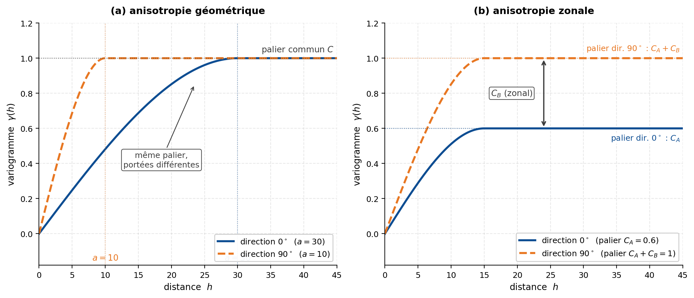
Anisotropie géométrique
L’anisotropie géométrique apparaît lorsque la portée varie selon la direction, tandis que le palier et l’effet de pépite demeurent identiques.
Les variogrammes directionnels atteignent alors le même palier, mais à des distances différentes. La structure peut être représentée par une ellipse en deux dimensions ou par un ellipsoïde en trois dimensions.
En deux dimensions, considérons :
- une portée maximale \(a_g\);
- une portée minimale \(a_p\);
- deux axes principaux orthogonaux;
- un angle définissant l’orientation de l’axe de portée maximale.
La portée dans une direction formant un angle \(\theta\) avec l’axe de portée maximale est :
\[ a_\theta = \frac{a_g a_p} { \sqrt{ a_p^2\cos^2(\theta) + a_g^2\sin^2(\theta) } }. \]
Cette formule satisfait notamment :
\[ a_{\theta=0}=a_g \]
et
\[ a_{\theta=90^\circ}=a_p. \]
Une autre approche consiste à transformer la distance anisotrope en une distance équivalente dans un système isotrope. Pour une séparation de longueur \(h\) formant un angle \(\theta\) avec l’axe de portée maximale :
\[ h_g = \sqrt{ \left[ h\cos(\theta) \right]^2 + \left[ \frac{a_g}{a_p} h\sin(\theta) \right]^2 }. \]
Le variogramme est ensuite évalué avec la portée maximale \(a_g\) et la distance transformée \(h_g\).
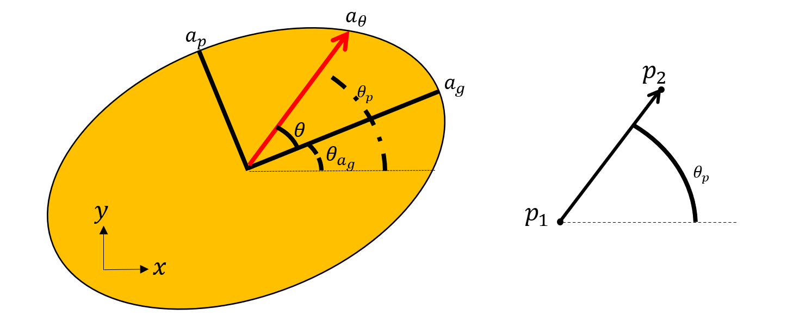
Une anisotropie géométrique peut être ramenée à un modèle isotrope par une rotation suivie d’une mise à l’échelle des coordonnées.
Exemple d’anisotropie géométrique
Considérons un modèle sphérique comprenant :
- un effet de pépite \(C_0=13\ \%^2\);
- un palier partiel \(C=17\ \%^2\);
- une portée maximale \(a_g=100\) m orientée à \(30^\circ\);
- une portée minimale \(a_p=60\) m orientée à \(120^\circ\).
On souhaite calculer le variogramme entre les points :
\[ (x_1,y_1)=(10,30) \]
et
\[ (x_2,y_2)=(40,20). \]
Méthode 1 — Portée directionnelle
Le vecteur de séparation est :
\[ \Delta x = 40-10 = 30, \]
et
\[ \Delta y = 20-30 = -10. \]
La distance entre les deux points vaut :
\[ h = \sqrt{ (\Delta x)^2+(\Delta y)^2 } = \sqrt{ 30^2+(-10)^2 } = 31{,}62\ \text{m}. \]
La direction du vecteur, selon la convention trigonométrique, est :
\[ \theta_h = \operatorname{atan2}(-10,30) = -18{,}43^\circ. \]
L’angle aigu entre ce vecteur et l’axe de portée maximale orienté à \(30^\circ\) vaut :
\[ \theta = 48{,}43^\circ. \]
La portée dans cette direction est donc :
\[ a_\theta = \frac{ 100\times60 } { \sqrt{ 60^2\cos^2(48{,}43^\circ) + 100^2\sin^2(48{,}43^\circ) } } = 70{,}80\ \text{m}. \]
Comme \(h<a_\theta\), le modèle sphérique donne :
\[ \gamma(h) = C_0 + C \left[ \frac{3h}{2a_\theta} - \frac{1}{2} \left( \frac{h}{a_\theta} \right)^3 \right]. \]
Ainsi :
\[ \gamma(31{,}62) = 13 + 17 \left[ \frac{3\times31{,}62}{2\times70{,}80} - \frac{1}{2} \left( \frac{31{,}62}{70{,}80} \right)^3 \right] \approx 23{,}63\ \%^2. \]
Méthode 2 — Distance transformée
La distance équivalente dans le système isotrope est :
\[ h_g = \sqrt{ \left[ 31{,}62\cos(48{,}43^\circ) \right]^2 + \left[ \frac{100}{60} \times 31{,}62 \sin(48{,}43^\circ) \right]^2 }. \]
On obtient :
\[ h_g = 44{,}67\ \text{m}. \]
Le variogramme est ensuite calculé avec la portée maximale \(a_g=100\) m :
\[ \gamma(h_g) = 13 + 17 \left[ \frac{3\times44{,}67}{2\times100} - \frac{1}{2} \left( \frac{44{,}67}{100} \right)^3 \right]. \]
Ainsi :
\[ \gamma(44{,}67) \approx 23{,}63\ \%^2. \]
Les deux méthodes conduisent au même résultat.
Détection de l’anisotropie géométrique
L’identification d’une anisotropie dépend fortement de la configuration des données et des paramètres utilisés pour calculer les variogrammes directionnels.
Une anisotropie peut être sous-estimée lorsque :
- les directions calculées ne correspondent pas aux axes principaux réels;
- la tolérance angulaire est trop large;
- le nombre de paires est insuffisant;
- les classes de distance ne couvrent pas correctement les portées;
- la géologie présente plusieurs structures emboîtées.
Des règles comme un nombre minimal de données ou un rapport d’anisotropie supérieur à une certaine valeur doivent être considérées comme des repères pratiques, et non comme des critères universels. La capacité à détecter une anisotropie dépend du plan d’échantillonnage, de la force de la structure et du bruit présent dans les données.
La Figure 7.13 illustre la différence entre le rapport d’anisotropie réel et celui observé lorsque les variogrammes ne sont pas calculés exactement selon les directions principales.
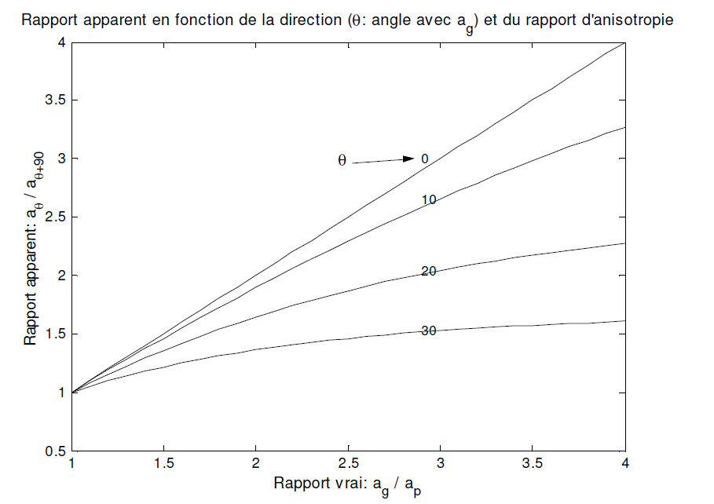
La Figure 7.14 montre l’effet de la tolérance angulaire. Une fenêtre plus large augmente le nombre de paires, mais mélange davantage les directions et réduit généralement l’anisotropie apparente.
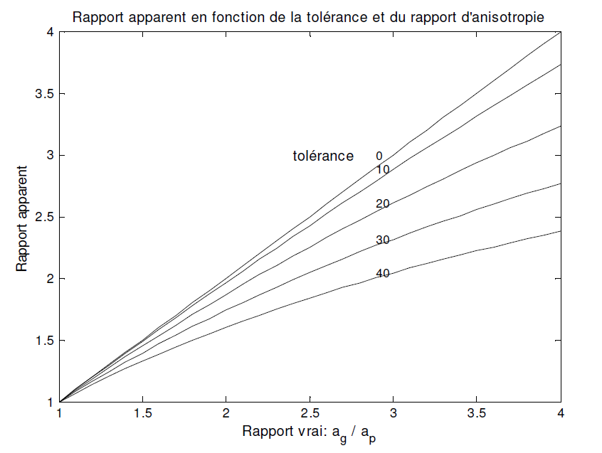
Anisotropie zonale
L’anisotropie zonale apparaît lorsque le palier varie selon la direction. Une simple transformation géométrique des coordonnées ne suffit alors plus à rendre le modèle isotrope.
Ce comportement peut être représenté par une somme de structures possédant des anisotropies différentes. En deux dimensions, un modèle simplifié peut s’écrire :
\[ \gamma(\mathbf{h}) = \gamma_{\mathrm{iso}} \left( \lVert\mathbf{h}\rVert \right) + \gamma_z \left( \left| \mathbf{h}\cdot\mathbf{n} \right| \right), \]
où :
- \(\gamma_{\mathrm{iso}}\) est une composante isotrope;
- \(\gamma_z\) est une composante zonale;
- \(\mathbf{n}\) est un vecteur unitaire perpendiculaire à la direction de continuité infinie de la composante zonale.
Dans la direction où \(\mathbf{h}\cdot\mathbf{n}=0\), la composante zonale ne contribue pas au variogramme. Dans la direction perpendiculaire, elle augmente le palier apparent.
La modélisation d’une anisotropie zonale est généralement plus délicate que celle d’une anisotropie géométrique. Elle doit être fondée sur des variogrammes directionnels suffisamment robustes et sur une interprétation géologique cohérente.
Cas tridimensionnel
En trois dimensions, l’ellipse d’anisotropie devient un ellipsoïde défini par :
- trois portées principales;
- trois directions principales orthogonales;
- une convention de rotation permettant d’orienter l’ellipsoïde dans l’espace.
Selon le logiciel, l’orientation peut être décrite par trois angles d’Euler, par un azimut, un pendage et une rotation autour de l’axe principal, ou par une autre convention équivalente.
Il est essentiel de vérifier :
- l’ordre des rotations;
- le sens positif des angles;
- l’axe autour duquel chaque rotation est effectuée;
- la convention utilisée pour l’azimut et le pendage;
- le système de coordonnées et son orientation.
La modélisation 3D peut être limitée par la disposition des données. Avec des forages principalement verticaux, les paires sont nombreuses dans la direction verticale, mais souvent rares dans certaines directions horizontales. Les portées horizontales deviennent alors difficiles à estimer, surtout lorsque l’espacement entre les forages est grand.
La définition des tolérances directionnelles exige également une attention particulière. Une même tolérance angulaire ne sélectionne pas nécessairement un volume comparable autour d’un vecteur horizontal et autour d’un vecteur vertical.
🧮 Atelier interactif 7.4 — Anisotropie 3D
Définissez les trois portées principales de l’ellipsoïde d’anisotropie, puis modifiez ses angles d’orientation. Observez comment l’ellipsoïde et les variogrammes directionnels associés évoluent selon les paramètres choisis.
La géométrie de l’anisotropie étant établie, il reste à déterminer les paramètres du modèle à partir des données. Cette étape correspond à l’ajustement du variogramme théorique.
7.5 Ajustement d’un modèle théorique
L’ajustement d’un modèle de variogramme combine généralement deux approches : l’interprétation visuelle et l’optimisation automatique.
L’ajustement visuel permet de tenir compte de la forme générale du variogramme expérimental, de la géologie, des directions de continuité et de la qualité des différentes classes de distance. L’ajustement automatique permet ensuite d’estimer les paramètres de manière reproductible à partir d’un critère numérique.
Ces deux approches sont donc complémentaires. L’ajustement automatique est particulièrement utile lorsque le type de modèle et la structure générale sont déjà connus, par exemple lorsqu’on souhaite estimer l’effet de pépite, le palier et la portée d’un modèle sphérique isotrope. Il est également utile dans les études de simulation, lorsque les données sont générées à partir d’un modèle connu.
Lorsque le nombre de données est faible, le variogramme expérimental devient instable, car chaque classe contient peu de paires. Une méthode automatique ne crée toutefois pas d’information supplémentaire. La validation croisée ou les méthodes fondées directement sur les données peuvent aider à comparer des modèles, mais leurs résultats demeurent eux aussi incertains lorsque l’échantillon est limité.
L’ajustement d’un variogramme ne doit pas être traité comme une procédure entièrement automatique. Le type de modèle, le nombre de structures, les anisotropies et les directions principales doivent rester cohérents avec les données et avec la compréhension du phénomène étudié.
Deux étapes distinctes
La modélisation d’un variogramme comprend deux problèmes différents :
- déterminer la structure du modèle;
- estimer les paramètres de cette structure.
La première étape consiste notamment à choisir :
- le type de modèle, par exemple sphérique, exponentiel ou gaussien;
- le nombre de structures;
- la présence d’un effet de pépite;
- la présence d’une anisotropie;
- les directions principales de continuité.
Cette étape est difficile à automatiser complètement. Elle repose sur le variogramme expérimental, mais aussi sur des informations extérieures aux données : géologie, stratification, processus de dépôt, précision analytique, support des échantillons et résultats obtenus sur des cas comparables.
La seconde étape consiste à estimer les paramètres du modèle retenu, par exemple :
- l’effet de pépite \(C_0\);
- les paliers partiels \(C_i\);
- les portées \(a_i\);
- les rapports d’anisotropie;
- les angles d’orientation.
Cette estimation peut être réalisée visuellement, par moindres carrés, par maximum de vraisemblance ou à l’aide de critères de validation croisée.
Estimateurs robustes de la structure spatiale
Le variogramme expérimental classique repose sur des différences au carré :
\[ \widehat{\gamma}(\mathbf{h}) = \frac{1}{2N(\mathbf{h})} \sum_{(i,j)\in\mathcal{P}(\mathbf{h})} \left[ z(\mathbf{x}_j)-z(\mathbf{x}_i) \right]^2. \]
Cet estimateur est sensible aux valeurs extrêmes. Pour une variable fortement asymétrique, comme certaines teneurs en métaux précieux, une seule valeur élevée peut produire de très grandes contributions et dominer une classe de distance.
Des estimateurs robustes peuvent alors être utilisés comme outils de diagnostic afin de mieux faire ressortir la structure spatiale générale.
Estimateur de Cressie–Hawkins
L’estimateur robuste de Cressie–Hawkins s’écrit :
\[ \widehat{\gamma}_{\mathrm{CH}}(\mathbf{h}) = \frac{1}{2} \frac{ \left[ \dfrac{1}{N(\mathbf{h})} \displaystyle\sum_{(i,j)\in\mathcal{P}(\mathbf{h})} \left| z(\mathbf{x}_j)-z(\mathbf{x}_i) \right|^{1/2} \right]^4 }{ 0{,}457+\dfrac{0{,}494}{N(\mathbf{h})} }. \]
La racine carrée appliquée aux différences réduit l’influence des écarts très élevés. La puissance quatre remet ensuite l’estimateur à l’échelle du variogramme, tandis que le dénominateur corrige approximativement le biais associé à cette transformation.
Cet estimateur peut être utile lorsque quelques valeurs très fortes masquent la structure générale. Il ne supprime toutefois pas la nécessité d’examiner les données, les paires responsables des grandes contributions et la pertinence d’une transformation de la variable.
Madogramme
Le madogramme, aussi appelé variogramme d’ordre un, est défini par :
\[ \widehat{\gamma}_1(\mathbf{h}) = \frac{1}{2N(\mathbf{h})} \sum_{(i,j)\in\mathcal{P}(\mathbf{h})} \left| z(\mathbf{x}_j)-z(\mathbf{x}_i) \right|. \]
Comme les écarts ne sont pas élevés au carré, les valeurs extrêmes ont moins d’influence que dans le variogramme classique.
Le madogramme ne possède toutefois pas les mêmes unités que le variogramme :
- le variogramme s’exprime dans les unités de la variable au carré;
- le madogramme s’exprime dans les unités de la variable.
Il ne se relie donc pas directement à la covariance et ne permet pas d’interpréter son palier comme une variance. Il est surtout utilisé pour repérer une échelle de continuité, comparer des directions ou vérifier si la structure apparente du variogramme classique est dominée par quelques valeurs extrêmes.
Un estimateur robuste ne remplace pas automatiquement le variogramme classique dans le krigeage. Il sert principalement à diagnostiquer la structure spatiale et à guider le choix du modèle.
Méthodes automatiques d’ajustement
1. Moindres carrés
L’ajustement par moindres carrés consiste à choisir les paramètres du modèle afin de réduire l’écart entre le variogramme expérimental et le modèle théorique.
Un critère général s’écrit :
\[ f(\boldsymbol{\theta}) = \sum_{k=1}^{K} w_k \left[ \widehat{\gamma}(h_k) - \gamma(h_k;\boldsymbol{\theta}) \right]^2, \]
où :
- \(K\) est le nombre de classes de distance;
- \(\widehat{\gamma}(h_k)\) est le variogramme expérimental;
- \(\gamma(h_k;\boldsymbol{\theta})\) est le modèle défini par les paramètres \(\boldsymbol{\theta}\);
- \(w_k\) est le poids attribué à la classe \(k\).
Moindres carrés ordinaires
Avec des poids identiques,
\[ w_k=1, \]
toutes les classes contribuent également au critère. Cette approche est simple, mais elle ne tient pas compte du fait que certaines classes contiennent davantage de paires ou sont estimées avec plus de stabilité.
Moindres carrés pondérés
Les poids peuvent être choisis pour accorder davantage d’importance aux classes contenant beaucoup de paires ou aux faibles distances, qui influencent fortement les estimations locales.
Un critère fréquemment utilisé est :
\[ f(\boldsymbol{\theta}) = \sum_{k=1}^{K} \frac{N(h_k)} {\gamma(h_k;\boldsymbol{\theta})^2} \left[ \widehat{\gamma}(h_k) - \gamma(h_k;\boldsymbol{\theta}) \right]^2. \]
Le poids de la classe \(k\) est alors :
\[ w_k = \frac{N(h_k)} {\gamma(h_k;\boldsymbol{\theta})^2}. \]
Le nombre de paires \(N(h_k)\) favorise les classes mieux échantillonnées. La division par le carré du modèle donne généralement davantage de poids aux classes où le variogramme est faible, souvent situées aux petites distances.
Le critère peut aussi être écrit sous forme matricielle :
\[ f(\boldsymbol{\theta}) = \left( \widehat{\boldsymbol{\gamma}} - \boldsymbol{\gamma}(\boldsymbol{\theta}) \right)^{\mathsf{T}} \mathbf{W} \left( \widehat{\boldsymbol{\gamma}} - \boldsymbol{\gamma}(\boldsymbol{\theta}) \right), \]
où \(\mathbf{W}\) est une matrice de poids généralement diagonale.
L’ajustement par moindres carrés est rapide et facile à appliquer. Il dépend toutefois :
- du choix des classes de distance;
- du nombre maximal de distances retenues;
- du choix des poids;
- du modèle initial;
- des contraintes imposées aux paramètres;
- de la présence de classes atypiques.
Les valeurs du variogramme expérimental ne sont ni indépendantes ni de variance constante. Les moindres carrés doivent donc être considérés comme une méthode d’ajustement pratique, et non comme une régression classique dont toutes les hypothèses seraient respectées.
2. Maximum de vraisemblance
Les méthodes de maximum de vraisemblance ajustent directement les paramètres du modèle de covariance à partir des données, sans passer par les classes du variogramme expérimental.
Sous une hypothèse gaussienne, le vecteur des observations \(\mathbf{z}\) est modélisé par :
\[ \mathbf{z} \sim \mathcal{N} \left( \mathbf{X}\boldsymbol{\beta}, \mathbf{C}_{\boldsymbol{\theta}} \right), \]
où :
- \(\mathbf{X}\boldsymbol{\beta}\) représente la moyenne ou la tendance;
- \(\mathbf{C}_{\boldsymbol{\theta}}\) est la matrice de covariance;
- \(\boldsymbol{\theta}\) contient les paramètres du modèle spatial.
La log-vraisemblance, à une constante additive près, s’écrit :
\[ \ell \left( \boldsymbol{\beta}, \boldsymbol{\theta} \right) = -\frac{1}{2} \left[ \log \left| \mathbf{C}_{\boldsymbol{\theta}} \right| + \left( \mathbf{z} - \mathbf{X}\boldsymbol{\beta} \right)^{\mathsf{T}} \mathbf{C}_{\boldsymbol{\theta}}^{-1} \left( \mathbf{z} - \mathbf{X}\boldsymbol{\beta} \right) \right]. \]
Les paramètres sont choisis afin de maximiser cette fonction.
La vraisemblance restreinte, ou REML, ajuste les paramètres de covariance à partir de contrastes qui éliminent les effets fixes. Elle réduit ainsi une partie du biais lié à l’estimation simultanée de la moyenne ou de la tendance.
Ces méthodes présentent plusieurs avantages :
- elles utilisent directement les positions et les observations;
- elles ne dépendent pas du choix des classes de distance;
- elles fournissent un cadre statistique pour comparer certains modèles;
- elles permettent, sous les hypothèses retenues, d’estimer l’incertitude associée aux paramètres.
Elles présentent aussi des limites :
- leur coût augmente rapidement avec le nombre de données;
- l’optimisation peut être sensible aux valeurs initiales et aux contraintes;
- les résultats peuvent être affectés par les valeurs extrêmes, l’asymétrie et une mauvaise spécification de la moyenne;
- une anisotropie ou une structure mal choisie ne sera pas corrigée par l’optimisation.
L’hypothèse gaussienne concerne la distribution conjointe des données. Lorsqu’elle est mal adaptée, l’estimation des paramètres et surtout l’interprétation de leur incertitude peuvent devenir moins fiables. Une transformation des données ou une méthode plus robuste peut alors être envisagée.
3. Validation croisée
La validation croisée permet d’évaluer les conséquences du modèle de variogramme sur les estimations.
Dans une validation croisée par retrait d’un point, chaque observation est retirée à tour de rôle, puis estimée à partir des autres données :
\[ e_i = z(\mathbf{x}_i) - \widehat{z}^{(-i)}(\mathbf{x}_i), \]
où \(\widehat{z}^{(-i)}(\mathbf{x}_i)\) est l’estimation obtenue sans utiliser l’observation \(i\).
Plusieurs statistiques peuvent être calculées.
Erreur moyenne
\[ \operatorname{ME} = \frac{1}{n} \sum_{i=1}^{n} e_i. \]
Une erreur moyenne proche de zéro indique l’absence de biais global important.
Racine de l’erreur quadratique moyenne
\[ \operatorname{RMSE} = \sqrt{ \frac{1}{n} \sum_{i=1}^{n} e_i^2 }. \]
La RMSE mesure l’amplitude générale des erreurs de prédiction.
Erreur standardisée
Si \(\sigma_{K,i}^2\) est la variance de krigeage associée à l’estimation du point \(i\), l’erreur standardisée est :
\[ e_i^\ast = \frac{e_i}{\sigma_{K,i}}. \]
La moyenne des erreurs standardisées devrait être proche de zéro :
\[ \frac{1}{n} \sum_{i=1}^{n} e_i^\ast \approx 0. \]
La racine de leur moyenne quadratique devrait être proche de un :
\[ \sqrt{ \frac{1}{n} \sum_{i=1}^{n} \left( e_i^\ast \right)^2 } \approx 1. \]
Une valeur nettement supérieure à un indique généralement que les incertitudes sont sous-estimées. Une valeur nettement inférieure à un indique qu’elles sont surestimées.
La validation croisée est utile pour :
- détecter un biais;
- comparer des modèles proches;
- vérifier la cohérence des variances de krigeage;
- comparer des voisinages de recherche;
- repérer certaines observations influentes.
Elle ne doit toutefois pas être utilisée comme seul critère de sélection. Plusieurs modèles différents peuvent produire des erreurs de validation croisée semblables, particulièrement lorsque les données sont peu nombreuses ou regroupées. Un modèle peut aussi être performant en prédiction tout en étant difficile à interpréter géologiquement.
Démarche recommandée
Une démarche pratique d’ajustement peut suivre les étapes suivantes :
- examiner les données, leur distribution, leur support et les valeurs extrêmes;
- calculer des variogrammes expérimentaux omnidirectionnels et directionnels;
- comparer, au besoin, le variogramme classique à des estimateurs robustes;
- déterminer le nombre de structures et les anisotropies à partir des données et de la géologie;
- effectuer un premier ajustement visuel;
- optimiser les paramètres avec une méthode automatique appropriée;
- vérifier l’admissibilité, la stabilité et la cohérence géologique du modèle;
- utiliser la validation croisée pour comparer les modèles retenus et évaluer leur comportement prédictif.
L’objectif n’est pas d’obtenir la courbe qui passe exactement par tous les points expérimentaux. Il faut plutôt construire un modèle simple, admissible et cohérent avec les principales échelles de continuité du phénomène.
🧮 Atelier interactif 7.5 — Ajustement manuel 1D
Ajustez manuellement le type de modèle, la portée, le palier et l’effet de pépite d’un variogramme théorique sur des données simulées. Le RMSE indique l’écart entre le modèle et les points expérimentaux. Utilisez ensuite la fonction « Révéler la vérité » pour comparer votre ajustement au modèle ayant servi à produire les données.
L’atelier précédent suppose une continuité identique dans toutes les directions. En présence d’une anisotropie, il faut également ajuster les portées directionnelles et l’orientation des axes principaux.
🧮 Atelier interactif 7.6 — Ajustement 2D anisotrope
Ajustez la portée majeure \(a_{\mathrm{maj}}\), la portée mineure \(a_{\mathrm{min}}\) et l’angle d’orientation \(\theta\). Le widget présente les variogrammes calculés le long des deux axes principaux ainsi que l’ellipse d’anisotropie correspondante.
Ces méthodes permettent d’ajuster une première structure spatiale. Plusieurs phénomènes présentent toutefois plus d’une échelle de continuité. Leur représentation nécessite alors des modèles emboîtés.
7.6 Modèles imbriqués de variogramme
Un seul modèle élémentaire ne suffit pas toujours à représenter l’ensemble de la structure spatiale. Un phénomène peut présenter une continuité à courte distance, associée par exemple à des variations locales, ainsi qu’une continuité à plus grande distance correspondant à une organisation régionale.
Il est alors possible d’additionner plusieurs modèles admissibles. La somme obtenue est appelée modèle imbriqué ou modèle emboîté.
Un modèle comprenant un effet de pépite et \(p\) structures spatiales peut s’écrire :
\[ \gamma(\mathbf{h}) = C_0\,\mathbb{1}_{\{\mathbf{h}\neq\mathbf{0}\}} + \sum_{k=1}^{p} C_k\, g_k(\mathbf{h};\boldsymbol{\theta}_k), \]
où :
- \(C_0\) est l’effet de pépite;
- \(\mathbb{1}_{\{\mathbf{h}\neq\mathbf{0}\}}\) vaut 0 à l’origine et 1 pour toute distance non nulle;
- \(C_k\geq0\) est le palier partiel de la structure \(k\);
- \(g_k\) est un modèle de variogramme admissible normalisé entre 0 et 1;
- \(\boldsymbol{\theta}_k\) regroupe les paramètres de la structure \(k\), notamment sa portée et, au besoin, son anisotropie.
Comme chaque composante est admissible et que les paliers partiels sont positifs ou nuls, leur somme demeure un variogramme admissible.
Si toutes les structures possèdent un palier fini, le palier total du modèle est :
\[ C_{\mathrm{tot}} = C_0 + \sum_{k=1}^{p} C_k. \]
Chaque structure contribue donc à une partie de la variabilité totale (Figure 7.15).
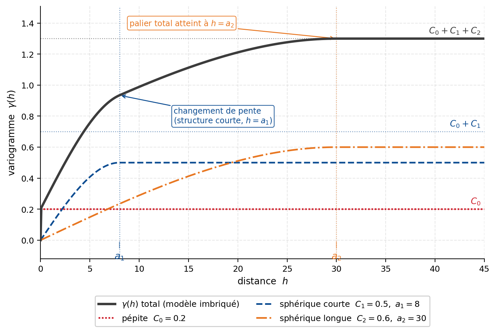
Exemple à deux structures
Considérons un modèle formé :
- d’un effet de pépite \(C_0\);
- d’une structure sphérique de courte portée \(a_1\) et de palier partiel \(C_1\);
- d’une structure exponentielle de plus longue portée \(a_2\) et de palier partiel \(C_2\).
Le modèle s’écrit :
\[ \gamma(h) = C_0\,\mathbb{1}_{\{h>0\}} + C_1\,g_{\mathrm{sph}}(h;a_1) + C_2\,g_{\mathrm{exp}}(h;a_2), \]
avec :
\[ a_1<a_2. \]
La première structure contrôle principalement la croissance du variogramme aux faibles distances. La seconde prolonge cette croissance à une échelle plus grande jusqu’au palier total :
\[ C_{\mathrm{tot}} = C_0+C_1+C_2. \]
Le variogramme peut ainsi présenter plusieurs changements de pente correspondant à différentes échelles de continuité.
| Composante | Paramètre principal | Contribution au modèle |
|---|---|---|
| Effet de pépite | \(C_0\) | Variabilité non résolue à très courte distance |
| Structure 1 | \(C_1\), \(a_1\) | Continuité à courte distance |
| Structure 2 | \(C_2\), \(a_2\) | Continuité à plus grande distance |
Interprétation et ajustement
L’ajout d’une structure doit être justifié par une caractéristique persistante du variogramme expérimental, par exemple :
- un changement net de pente;
- plusieurs échelles de continuité;
- des comportements directionnels différents selon la distance;
- une interprétation géologique plausible.
Chaque structure peut posséder sa propre portée et sa propre anisotropie. Une structure à courte portée peut, par exemple, être presque isotrope, tandis qu’une structure à grande portée peut être fortement anisotrope.
Cette souplesse augmente toutefois le nombre de paramètres à estimer. Des modèles différents peuvent alors produire des courbes très semblables, surtout lorsque certaines classes de distance contiennent peu de paires. Il faut donc privilégier le modèle le plus simple qui représente adéquatement les principales caractéristiques observées.
Les différentes structures d’un modèle imbriqué ne correspondent pas nécessairement à des processus géologiques distincts. Elles constituent d’abord une représentation mathématique de plusieurs échelles de continuité. Toute interprétation géologique doit être appuyée par des informations indépendantes.
Si l’une des composantes ne possède pas de palier, comme un modèle de puissance, le modèle imbriqué complet ne possède pas non plus de palier total fini.
🧮 Atelier interactif 7.7 — Calculateur de variogramme imbriqué
Combinez jusqu’à trois structures spatiales — sphérique, exponentielle ou gaussienne — avec un effet de pépite global afin de construire un modèle imbriqué. Chaque structure contribue au modèle selon son propre palier partiel et sa propre portée. Observez comment leur superposition produit plusieurs échelles de continuité et détermine le palier total.
7.7 Remarques pratiques concernant le variogramme
Fiabilité des points expérimentaux
Tous les points d’un variogramme expérimental ne sont pas également fiables. Le nombre de paires \(N(h)\) constitue un premier indicateur, mais il ne suffit pas à lui seul : une même observation peut participer à plusieurs paires, et des paires nombreuses peuvent rester spatialement redondantes.
La règle des 30 paires par classe peut servir de repère :
- plus de 30 paires : point généralement mieux renseigné;
- de 10 à 30 paires : interprétation prudente;
- moins de 10 paires : point souvent trop instable pour guider seul l’ajustement.
Ces seuils ne sont pas absolus. Il faut aussi examiner la répartition des paires, la présence de valeurs extrêmes et la cohérence des classes voisines.
Les premières classes sont particulièrement importantes, car elles renseignent sur la continuité à courte distance, la pente à l’origine et l’effet de pépite. Toutefois, si la distance minimale entre les observations est trop grande, il devient difficile de distinguer un effet de pépite d’une structure de très courte portée.
À grande distance, les points sont souvent moins stables. Une distance maximale d’environ la moitié de l’étendue du domaine peut servir de point de départ :
\[ h_{\max} \approx \frac{d_{\max}}{2}. \]
Cette règle doit être adaptée à la distribution réelle des paires et à la distance à laquelle le variogramme semble atteindre son palier.
Analyse directionnelle en 2D
En deux dimensions, on peut commencer par un variogramme omnidirectionnel, puis calculer des variogrammes selon les directions suggérées par la géologie et la carte variographique.
Des directions comme \(0^\circ\), \(45^\circ\), \(90^\circ\) et \(135^\circ\) sont utiles pour une première exploration, mais elles ne remplacent pas les directions structurales connues.
Pour chaque direction, il faut vérifier :
- le nombre de paires par classe;
- la distance maximale correctement renseignée;
- la stabilité de la courbe;
- la cohérence avec les directions voisines.
Des portées différentes pour un même palier peuvent indiquer une anisotropie géométrique. Des paliers différents peuvent suggérer une anisotropie zonale, mais aussi une tendance, des populations différentes ou un domaine mal défini.
L’ajustement doit donc être réalisé simultanément dans les principales directions, plutôt que de fixer d’abord un modèle omnidirectionnel définitif.
Classes de distance et tolérances
La largeur des classes contrôle le compromis entre résolution et stabilité :
- des classes trop étroites contiennent peu de paires et produisent une courbe irrégulière;
- des classes trop larges lissent la structure et peuvent masquer une courte portée.
Le pas de calcul doit être cohérent avec l’espacement des données. Une tolérance sur la distance égale à environ la moitié du pas est souvent utilisée :
\[ \Delta h \approx \frac{h_{\mathrm{pas}}}{2}. \]
Pour les variogrammes directionnels, la tolérance angulaire et la largeur de bande déterminent quelles paires sont retenues. Une tolérance faible distingue mieux les directions, mais réduit le nombre de paires. Une tolérance large stabilise la courbe, mais peut atténuer une anisotropie réelle.
Des tolérances angulaires de l’ordre de \(\pm 10^\circ\) à \(\pm 22{,}5^\circ\) peuvent servir de valeurs initiales, sans constituer des règles universelles.
Données 3D et simplification en 2D
En trois dimensions, la qualité du variogramme dépend fortement de la géométrie de l’échantillonnage. Dans un contexte minier, les données sont souvent nombreuses le long des forages, mais plus rares entre les forages. Certaines directions peuvent donc être bien renseignées et d’autres presque absentes.
Les erreurs de localisation, de déviation des forages ou de position des échantillons peuvent également augmenter artificiellement la variabilité à courte distance et contribuer à l’effet de pépite.
Pour certains gisements minces ou tabulaires, une représentation en deux dimensions peut être appropriée, à condition que la géométrie soit bien définie et que les distances soient calculées dans le plan de la structure.
On peut alors modéliser séparément :
- l’épaisseur vraie \(t\);
- l’accumulation \(A\), définie par :
\[ A=t\,g, \]
où \(g\) est la teneur moyenne.
Pour deux portions de même surface, la teneur moyenne combinée est :
\[ \overline{g} = \frac{t_1g_1+t_2g_2}{t_1+t_2} = \frac{A_1+A_2}{t_1+t_2}. \]
Dans une approche indirecte, la teneur peut être reconstruite à partir des estimations de l’accumulation et de l’épaisseur :
\[ \widehat{g} = \frac{\widehat{A}}{\widehat{t}}. \]
Cette approche tient compte des variations d’épaisseur, mais elle peut devenir instable lorsque l’épaisseur estimée est faible. Elle doit donc être comparée à une estimation directe de la teneur.
La réduction d’un problème 3D à un problème 2D doit être justifiée par la géométrie du gisement. Elle simplifie la modélisation, mais ne supprime pas l’incertitude liée à l’épaisseur, à l’orientation ou à la localisation des données.
🧮 Atelier interactif 7.8 — Impact du nombre de données
Faites varier le nombre \(N\) de points échantillonnés et observez l’effet sur le nombre de paires et la stabilité du variogramme expérimental. La taille des marqueurs est proportionnelle au nombre de paires par classe.
7.8 Problèmes courants et solutions possibles
Le variogramme expérimental peut être déformé par la distribution des valeurs, la géométrie de l’échantillonnage, les erreurs de localisation ou le mélange de populations différentes. Ces effets doivent être diagnostiqués avant l’ajustement du modèle.
Données extrêmes
Le variogramme repose sur des différences au carré. Une valeur extrême peut donc produire de très grandes contributions, surtout si elle participe à plusieurs paires d’une même classe de distance.
Son influence dépend aussi de sa position dans le domaine. Une valeur extrême située au centre participe généralement à davantage de paires qu’une valeur située en bordure, mais la répartition de ces paires entre les classes peut produire des formes très différentes.
La Figure 7.16 compare l’effet d’une valeur extrême selon sa position dans le domaine.
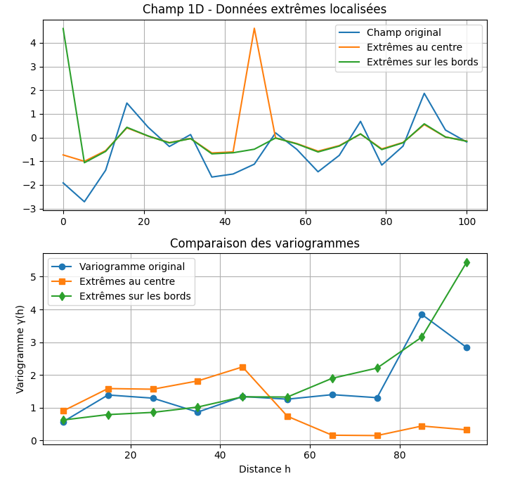
Avant toute correction, il faut déterminer si la valeur est :
- une erreur de saisie, de localisation ou d’analyse;
- une observation valide appartenant au même domaine géologique;
- une observation valide provenant d’une population différente.
Une valeur ne doit être supprimée que si une erreur est démontrée. Lorsqu’elle est valide, plusieurs analyses peuvent être comparées :
- variogramme avec et sans la valeur, à des fins de diagnostic;
- estimateur robuste;
- transformation de la variable;
- séparation des domaines;
- traitement particulier des valeurs fortement asymétriques.
L’écrêtage ou la transformation logarithmique modifient la variable étudiée. Ils doivent donc être justifiés et leur effet sur l’estimation finale doit être évalué.
Erreurs de localisation
Une erreur de position modifie à la fois la distance et la direction associées à une paire. Elle brouille principalement la structure à courte distance et peut augmenter l’effet de pépite apparent.
La Figure 7.17 compare un variogramme calculé avec des positions exactes à celui obtenu après perturbation des coordonnées.
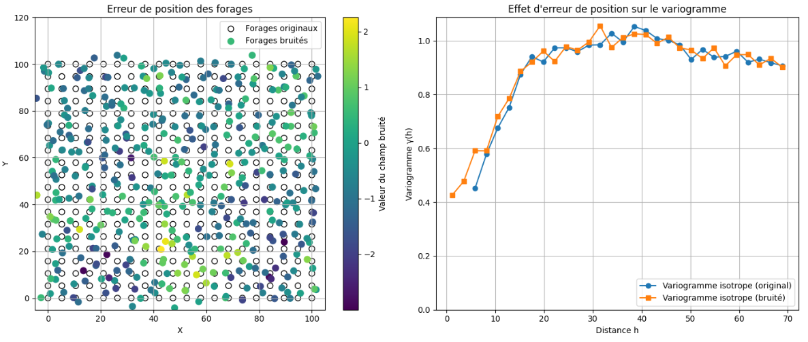
Ce problème est particulièrement important en trois dimensions, notamment lorsque la trajectoire des forages est mal connue.
Les principales mesures préventives sont :
- vérifier les coordonnées et les unités;
- contrôler les levés d’arpentage;
- utiliser les trajectoires corrigées des forages;
- conserver l’information sur l’incertitude de position;
- réaliser une analyse de sensibilité lorsque cette incertitude est importante.
Échantillonnage non uniforme
Des pas d’échantillonnage différents modifient le nombre et la répartition des paires. Une zone densément échantillonnée peut alors dominer le variogramme combiné.
La Figure 7.18 illustre le mélange de deux zones ayant des pas et des structures différents.
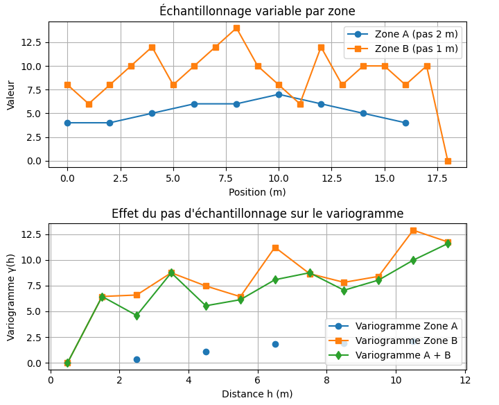
Avant de calculer le variogramme, il faut distinguer trois situations :
- les données ont des espacements différents, mais un support comparable;
- les données ont des supports différents;
- les zones appartiennent à des domaines géologiques différents.
Les solutions possibles comprennent :
- le calcul de variogrammes séparés par domaine;
- la mise sur un support commun par composition;
- l’utilisation d’une stratégie de pondération ou de désagrégation;
- une analyse de sensibilité à la densité d’échantillonnage.
La décimation peut être utile pour un diagnostic, mais elle élimine de l’information et ne devrait pas constituer la solution par défaut.
Mélange de domaines géologiques
Un variogramme calculé sur plusieurs domaines peut combiner des moyennes, des variances et des structures spatiales différentes. Les paires qui traversent une limite géologique peuvent alors produire de fortes différences qui ne représentent pas la continuité à l’intérieur de chaque domaine.
La Figure 7.19 montre qu’un variogramme global peut paraître régulier tout en masquant deux structures distinctes.
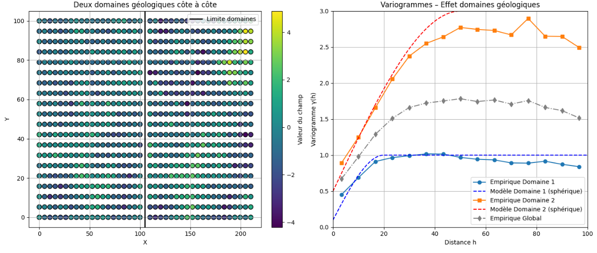
La définition des domaines doit donc précéder la modélisation du variogramme. Les diagnostics utiles comprennent :
- les statistiques par domaine;
- les cartes et coupes géologiques;
- les variogrammes calculés séparément;
- les paires qui traversent les limites;
- les résultats de validation croisée par domaine.
La validation croisée peut révéler certains problèmes, mais elle ne remplace pas la définition géologique des populations stationnaires.
Échantillonnage préférentiel
Un échantillonnage supplémentaire est souvent réalisé autour des valeurs élevées. Cette stratégie augmente le nombre de paires à courte distance dans les zones riches et peut modifier artificiellement le variogramme.
La Figure 7.20 compare un échantillonnage initial, un ré-échantillonnage préférentiel et un ré-échantillonnage plus uniforme.
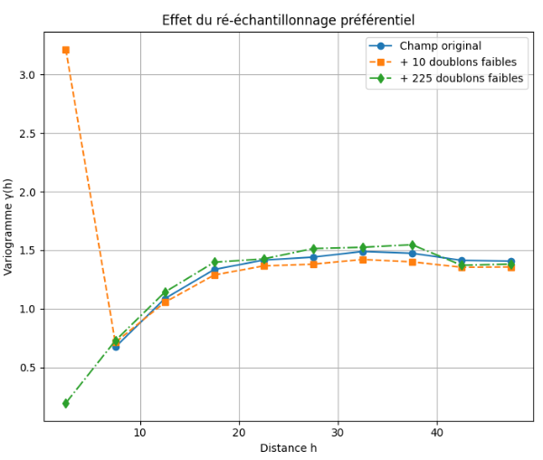
Ce problème ne provient pas seulement du nombre de données, mais du lien entre la densité d’échantillonnage et la valeur observée.
Les options possibles sont :
- distinguer les données initiales des données de suivi;
- vérifier la comparabilité des supports;
- utiliser des poids de déclustering;
- calculer des variogrammes sur plusieurs sous-échantillons;
- comparer les résultats avec et sans les données de suivi.
Une décimation systématique peut réduire le biais, mais elle doit être utilisée avec prudence, puisqu’elle élimine également de l’information pertinente.
Coordonnées géologiques
La continuité spatiale peut être plus simple dans un repère lié à la géologie que dans les coordonnées cartésiennes originales. C’est notamment le cas pour les unités plissées, les veines courbes, les chenaux ou les panaches suivant une trajectoire d’écoulement.
La Figure 7.21 illustre l’effet d’un déplissement sur le variogramme.
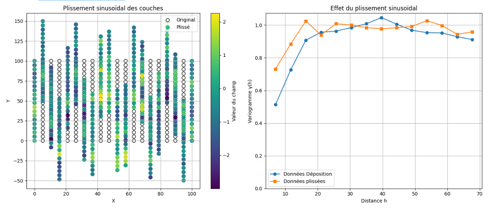
Une transformation des coordonnées peut réduire des distances artificiellement grandes entre des points qui sont proches dans le repère géologique. Elle exige toutefois :
- une interprétation structurale fiable;
- une transformation continue;
- une conservation raisonnable des distances locales;
- une validation de la géométrie transformée.
Le déplissement ne doit pas être utilisé uniquement pour améliorer l’apparence du variogramme. Il doit correspondre à une hypothèse géologique défendable.
🧮 Atelier interactif 7.9 — Erreurs et effets géologiques
Choisissez un effet dans le menu et comparez le variogramme de référence au variogramme perturbé. Les cas proposés comprennent le mélange de domaines, les erreurs de localisation et de mesure, l’anisotropie masquée, le plissement, les données extrêmes, les pas d’échantillonnage variables et le ré-échantillonnage préférentiel.
Variogrammes relatifs
Cette section présente un outil de diagnostic utile pour certaines variables positives et fortement asymétriques. Elle peut être ignorée en première lecture.
Effet proportionnel
Un effet proportionnel est présent lorsque la variabilité locale augmente avec le niveau moyen de la variable. Les zones à forte teneur sont alors plus variables que les zones à faible teneur.
Dans le cas où l’écart-type local est approximativement proportionnel à la moyenne locale,
\[ \sigma_{\mathrm{local}} \propto m_{\mathrm{local}}, \]
la variance locale est approximativement proportionnelle au carré de cette moyenne :
\[ \sigma_{\mathrm{local}}^2 \propto m_{\mathrm{local}}^2. \]
Un variogramme global peut alors être dominé par les zones de forte moyenne et devenir difficile à comparer entre les secteurs.
Normalisation relative
Le variogramme relatif vise à représenter la variabilité par rapport au niveau moyen de la variable.
Une forme globale consiste à diviser le variogramme par le carré de la moyenne :
\[ \widehat{\gamma}_{R}(\mathbf{h}) = \frac{ \widehat{\gamma}(\mathbf{h}) }{ \overline{z}^{\,2} }. \]
Cette normalisation ne modifie pas la forme du variogramme global. Elle change seulement son échelle et facilite la comparaison entre des domaines ayant des moyennes différentes.
Une normalisation locale peut être appliquée en calculant séparément le variogramme dans plusieurs zones, puis en divisant chaque résultat par le carré de la moyenne correspondante.
Une autre forme est le variogramme relatif par paires :
\[ \widehat{\gamma}_{P}(\mathbf{h}) = \frac{1}{2N(\mathbf{h})} \sum_{(i,j)\in\mathcal{P}(\mathbf{h})} \frac{ \left[ z(\mathbf{x}_j)-z(\mathbf{x}_i) \right]^2 }{ \left[ \dfrac{ z(\mathbf{x}_j)+z(\mathbf{x}_i) }{2} \right]^2 }. \]
Cette forme normalise chaque contribution par le niveau moyen de la paire. Elle est très sensible aux dénominateurs faibles ou nuls et doit donc être réservée aux variables strictement positives, avec un traitement explicite des valeurs proches de zéro.
Interprétation
Les variogrammes relatifs sont principalement des outils de diagnostic. Ils peuvent aider à :
- comparer des structures entre des domaines de moyennes différentes;
- détecter un effet proportionnel;
- identifier une portée ou une anisotropie masquée par l’hétéroscédasticité.
Leur palier est sans dimension et ne représente pas directement la variance de la variable originale. Un variogramme relatif ne doit donc pas être utilisé directement dans un krigeage ordinaire sur l’échelle originale sans définir explicitement le modèle de variance locale et la manière de remettre les résultats à l’échelle.
Dans plusieurs cas, une transformation logarithmique, une modélisation par domaines ou un modèle non stationnaire constitue une solution plus cohérente.
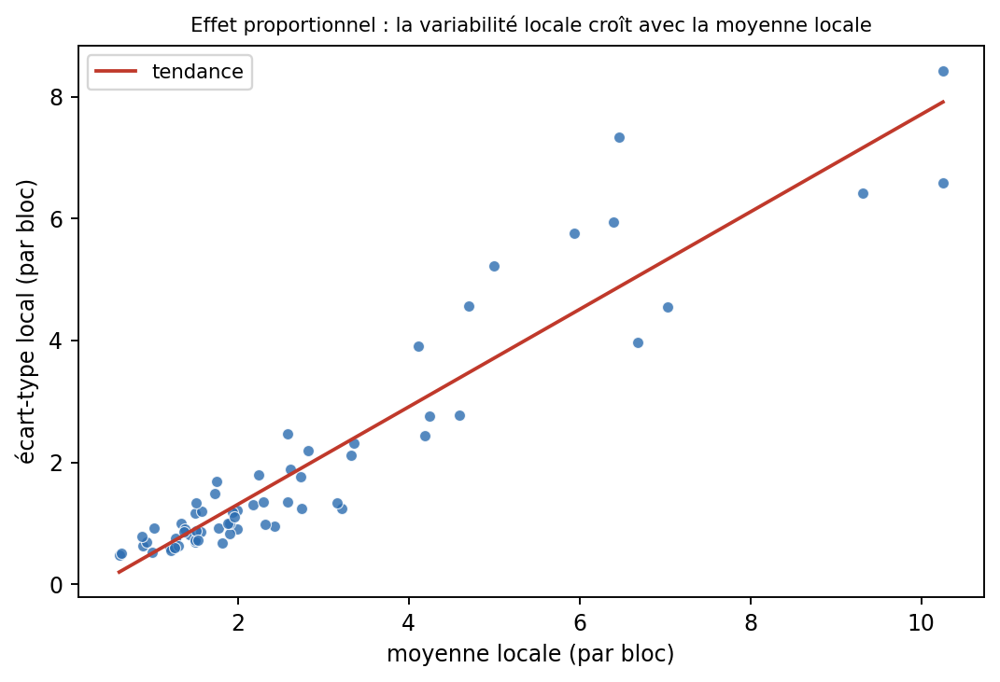